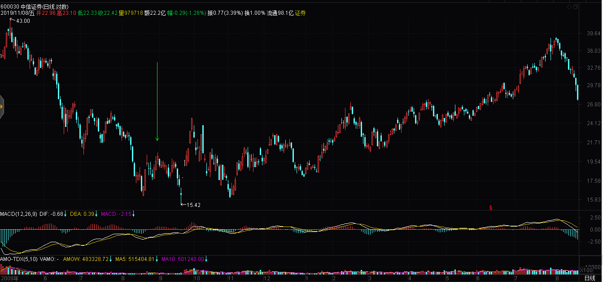
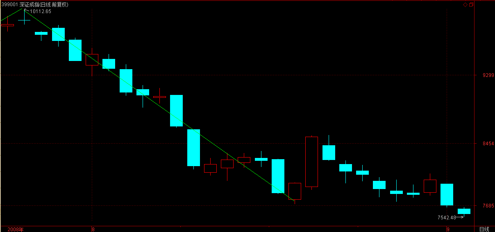
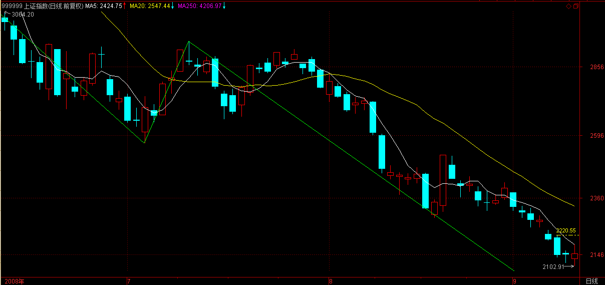
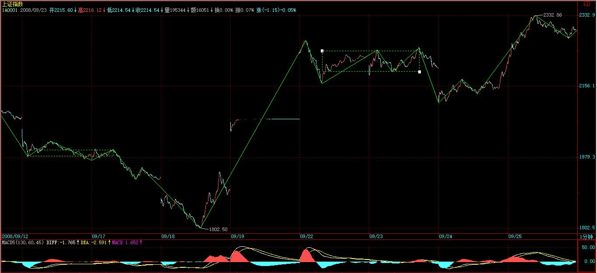
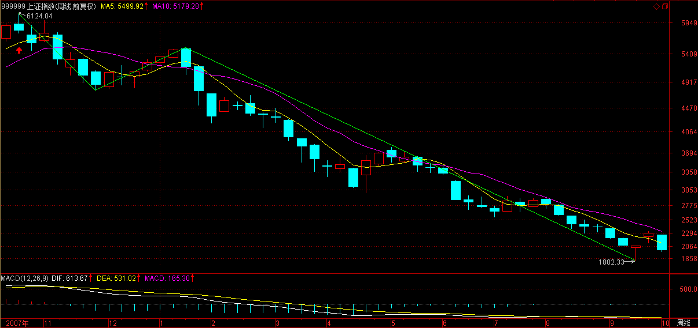

(2008-08-29 09:15:01)
何谓底部？这里给出精确的定义，以后就不会糊涂一片了。
底部都是分级别的，如果站在精确走势类型的角度，那么第一类买点出现后一知道【韶山映山红】笔误，“一直到”。】该买点所引发的中枢第一次走出第三类买卖点前，都可以看成底部构造的过程。【韶山映山红】“看成”，也就是说，有时候，不都是底部，也会包括拉升的一部分。】
【韶山映山红】“该买点所引发的中枢”是谁？
要看第一类买点之后走势的演化与分类。第一个分类维度可以设定为：有没有中阴中枢。
１，最强势的转折，次级别Ｖ型反转，中阴中枢都没有，“该买点所引发的中枢”就只能是新走势的第一个中枢。29课说的第一段反弹就涨过下跌趋势最后一个中枢的情况，往往就属于这一类。这种情况对应的是下跌趋势+上涨趋势的转折，新走势的第一个中枢先出三买，底部构造完成，开始上涨。新走势的第一个中枢先出三卖，底部构造失败，具体划分要看具体的走势，只不过，即使继续下跌，一般也不算是原走势延伸，要么是形成了高级别线段类走势，要么就有扩展升级了。
２，次级别Ｖ型反转，形成本级别的中阴中枢，这个中枢的一部分属于前面的下跌趋势，因为有了一买之后的反弹才形成，也可以算是“该买点所引发的中枢”。中阴中枢先出三买，底部构造完成，开始上涨。中阴中枢先出三卖，底部构造失败，原走势延伸。原走势延伸这种情况，依然有可能演化为下跌趋势最后一个中枢的扩展升级，构筑更大级别的底部。
“底部构造的过程”从第一类买点开始算，底部本身却可以包括前面的一部分走势。
“底部都是分级别的”，首先要分析的级别就是前面下跌走势的级别。至于事实上的底部，有可能演化成更大级别的底部。
“都可以看成”，说明底部的结构分析并不完全属于“精确走势类型的角度”，只是基于走势类型的分析，实际上做的是底部的中枢分析。
】
只不过如果是第三类卖点先出现，就意味着这底部构造失败了，【韶山映山红】第一类买点之后有两种情况，一是形成中阴中枢，然后走出中阴中枢的第三类买卖点，一是形成新走势的中枢，然后走出新走势的第三类买卖点。 中阴中枢直接出三卖，那就转折都没有实现，只是中继，没有底部。新走势的第一个中枢先出三卖才是底部构造失败。 演化出更大级别底部的时候，这个三卖也要升级去看。】
反之，第三类买点意味着底部构造的最终完成并展开新的行情。【韶山映山红】中阴中枢先出三买，则至少有线段类走势级别的转折。 新走势的第一个中枢先出三买，则筑底成功，至少有了一个同级别盘整走势。不管成功还是失败，都是当下这个底部构造的过程。 也就是说，一买的介入，退出对标的是这个三卖，而不是根据一买的高低做平推？★以后研究。】
【韶山映山红】一买的介入，中阴中枢先出三卖就触发止损操作。第一段反弹太弱，中阴中枢都不能形成的，也触发止损操作。
新走势的第一个中枢先出三卖，触发的其实是止盈操作，跟新走势的第二个以及以后的中枢先出三卖，没有本质的区别。
做期货的主张根据一买的高低做平推，实际上不属于缠论的操作规范。只不过期货的走势和股票有差异，所以也可以有一些变通。 2019/07/11 11:37 】
当然，顶部的情况，反过来定义就是。
【韶山映山红】没有形成新走势的第一个中枢就出三卖，只是盘整中继，不算底部。】
【韶山映山红】缠师草图。】
此外，用分型的角度同样可以给出底部的概念，只是这粗糙一点，对一时把握不了精确走势类型分类的，这是一个将就的办法；【韶山映山红】分型的底部的概念，“粗糙”。“是一个将就的办法”。】无法判断是否走出新的走势类型，粗糙的有点过分，所以应该是必要条件：没有底分型就不是底部，有了也不一定真的是底部。】滞后，因为粗糙，所以判断更滞后。】不精准，没有一个节点去判断，只能看结果的表象。】
此外，一般性分析中，这方法也可以用，因为对把握大方向已经足够。【韶山映山红】“一般性分析中”，“把握大方向”。】
站在分型的角度，底部就是构成底分型的那个区间，【韶山映山红】分型角度的底部包括一买之前的走势。下面分析的实例，实际上就是左元素和底元素构成的区间，右元素如果新高，这本身就是站上底分型区间的标志。】
而跌破分型最低点意味着底部构成失败，【韶山映山红】走势类型分析，底部构造失败的标志是新走势的中枢的第三类卖点。分型分析，底部构造失败的标志是“跌破分型最低点”，等于是跌破一买，如果有震荡就有可能误判。】
反之，有效站住分型区间上边沿，就意味着底部构造成功并至少展开一笔一上行情。【韶山映山红】这里说的“分型区间上边沿”实际上就是分型左元素的高点。如果不用第三类买点，又如何判断“有效站住”？3个K线算站住？怎么保证“至少展开一笔一上行情”？★可以做个专题，以后研究。】
其实，这都不是什么新鲜内容，但这里统一说出来，还是有好处的。
同样，顶部反过来就是。
注意了，有了这个定义，就一定要搞明白，不是在底部的区间上买，【韶山映山红】不是在底部区间离开段的高位买。】
而是相反，应该和中枢震荡的操作一样，在区间下探失败时买，这才是最好的买点，【韶山映山红】寻找下探失败，也就是低级别的背驰，还是要回到精确的走势类型分析。】
连这都搞不明白，就白学了。【韶山映山红】不是等底部构造完成再买，而是在底部构造的过程中找次级别的底背驰买，同时可以在底部构造过程中打短差降低成本。等底部构造完成也就完成了建仓。如果底部构造失败才可以不亏退出。 也就是说，最根本的还是第一类买点的背驰判断。】
此外，底部是有级别的，日线图上的底分型，当然就对应着分型意义上的日线级别底部。【韶山映山红】分型所在K线图的级别，就是“分型意义上”的底部的级别。】
现在就有一个现成有意义的例子，2008年8月这月K线基本走出来了，显然，9月是否能构造出底分型，关键是看这个区间（2284，2952），【韶山映山红】是否能构造出底分型，并不需要参考分型区间的上沿2952，只要涨过中间K线的高点2830就够了。缠师在这里说分型区间的上沿2952，还是在想转折的事，所以下面一段文字说的是买点。】其中2284点是绝对不能破的，一旦破了，就马上宣告月底分型至少要到10月后才有戏。【韶山映山红】不能新低，只要新低就是破底，不需要别的确认。】
因此，即使9月没到，我们已经可以有一个大致的操作强弱分类空间了，只要回2284点不破的任何分型意义上周级别以下走势，都必然成为一个良好的短线买点，而且其中可以充分利用类似区间套的方法去找到最精确的买入位置。【韶山映山红】“回2284点”的走势，“不破”2284点的走势，“分型意义上”的走势，“周级别以下”的走势，几个要素并存。这里为什么要说“分型意义上”？★也就是说，日线、60分钟线……一级一级都看分型和笔，这样一层一层去区间套，而不是递归走势去区间套。】
【韶山映山红】下图是阿娇博客配图。】
同样，马上可以断言的是，在10月有效确认站住2952点前，【韶山映山红】9月站上，则10月确认。9月没站上，则10月还不算确认。】月线意义上的行情是没有的，最多都只能看成是分型意义下月线级别的底部构造过程。【韶山映山红】站上分型区间的上沿，就可以期盼一个向上笔的走势。否则，就还是分型意义下月线级别的底部构造过程。前提是不新低。】因此，这对我们操作参与的力度与投入就有了一个很明确的指引。【韶山映山红】参与的力度与投入。没站上分型区间的上沿，就还是筑底过程，投入一买的仓位做底仓，投入二买的仓位打短差降成本。如果站上分型区间的上沿，表示筑底成功，投入三买的仓位。】
当然，对于一般投资者，月线图太大了，因此可以看周线图，【韶山映山红】对于一般投资者，用月线图看分型也还是太大了，可以看周线图的分型。】
例如，本周与上周比，到目前为止就是一个包含关系，【韶山映山红】本文发布于2008年08月29日开盘前的09:15:01，当日是星期五，周线还没有完成，所以说到目前为止。】
因此，到下周是关键的能否构成底分型的日子，而真正要走出底部，那还需要对（2284，2601）突破有效的确认，【韶山映山红】当下底分型的低点是2284点，左元素上沿是2601点。】也就说，在中秋前，【韶山映山红】中秋节。2008年9月14日，星期天。还有两周的交易日。】要确认一个分型意义下的周线行情是不可能的，【韶山映山红】确认的不是底部构造，而是周线行情，那就要做一笔向上的预判，需要站稳分型上沿。底部最快两周就能确认，行情要站稳三个K线才行。】除非今天，本周最后一天能突然突破2523点，否则就绝对不可能了。【韶山映山红】中秋节前还有两根周K线。突破有效的确认需要连续三根K线。如果今天就站上分型上沿，后面两个Ｋ线确认，就可以。由此可以知道，３天站稳的意思，包含站上的当天。】
从更短的日线看，目前无非就在8月18日开始那底分型引发的底部构造中，是否最终有效，就看（2284，2455）区间走势的演化了。【韶山映山红】底分型的上沿被突破了，但是随后就跌破，没站稳，所以还是底部构造，除非新低宣告筑底失败】】
【韶山映山红】底部构造是否最终有效，从这三个实例的区间可以看出来，判断依据不是整个底分型的区间，而是左元素和底元素构成的区间。因为右元素本身也是突破的考察对象。而笔是否成立的判断依据则是整个底分型的区间，要包括右元素。】
操作其实很简单，一个基本的原则就是，任何走势，无论怎么折腾，都逃不出这个节奏，就是底、顶以及连接两者的中间过程，【韶山映山红】底、顶，以及连接两者的中间过程。这个顶底的结构不同，连接两者的中间过程的结构也不同，于是，以顶底分型为依据的笔、线段的级别也就不同了。】
因此，在两头的操作节奏就是中枢震荡，【韶山映山红】分型的“操作节奏就是中枢震荡”。这个操作只能去更低级别做走势类型分析。另外，这个中枢不一定都存在于分型，形成中阴中枢的才有分型的中枢震荡，V型反转的就没有了。】
只是底的时候要先买后卖，顶的时候要先卖后买，这样更安全点。【韶山映山红】底部先买后卖，防踏空。顶部先卖后买，防被套。底部的买是按照第一、二、三类买卖点的顺序依次加仓的，背驰之后开始的卖就把顺序倒过来，一卖出掉三买的仓位，二卖出掉二买的仓位，打短差。三卖就出掉一买的仓位，实现清仓。】
至于中间的连接部分，就是持有，【韶山映山红】中间的连接部分全仓位持有，背驰开始做中枢震荡的操作。】
当然，对于空头走势，小板凳就是一个最好的持有，一直持有到底部构造完成。【韶山映山红】分型分析方法不能识别中继还是转折，只能去更低级别做走势类型分析，所以空仓要保持到底部构造完成。也就是说，不分三类买卖点，只在站稳分型区间上沿的时候直接买。】
而有技术的，根本就不需要什么小板凳，按操作级别，分清楚目前是三阶段中的哪一段，然后日日是好日，时时是花时，不赚钱那真是脑子有水了。【韶山映山红】三阶段：底、顶以及连接两者的中间过程。】
亏钱都是错误操作引起的，不断反省，才会有进步的。【韶山映山红】首先，要有正确的理论。然后，是正确的操作。】
【韶山映山红】下图是阿娇博客配图。】
【韶山映山红】下图是阿娇博客配图。】
【网文】最后一课
2019/11/09 5:18
还记得吗？我们读初中的时候，都学过的一篇课文，《最后一课》。
普法战争，战败的法国，割让的土地上，一个乡村小学，老师给孩子们上最后一堂法语课。
迟到的小朋友，很震惊，对以前读书的不努力，感到后悔。
可是，晚了。他将不再有机会，学习自己的母语。
老师，教的是，世界上最美、最清楚、最严谨的语言，想在他走以前，把自己全部的知识，都传授给我们，一下子把它们灌输到我们的脑子里。
缠论的最后一课是什么？
《教你炒股票108：何谓底部？从月线看中期走势演化》
何谓底部？讲的是顶底的结构。
缠论，始于均线，完善于走势类型，缠师在最后那段日子里，解盘，用的却是分型。
半部缠论是走势类型的自同构，半部缠论是分型的自同构。
这个过程，这个脉络，耐人寻味啊。
对小级别的剧烈走势，一直束手无策。
昨晚上突然想到，去更大级别的图上看分型，不就是缠师说过的办法么。即使没有形成筑顶、筑底中枢，分型也是顶底结构的表现形式啊。
众里寻他千百度。蓦然回首，那人却在，灯火阑珊处。还是把简单的问题复杂化了。
大道至简。
什么才是简？
路漫漫其修远兮，不要丢三落四。
芝麻道长：
从“市场的波动，归根结底是在前后两个高低点关系构成的一个完全分类中展开的”到“操作其实很简单，一个基本的原则就是，任何走势，无论怎么折腾，都逃不出这个节奏，就是底、顶以及连接两者的中间过程，因此，在两头的操 作节奏就是中枢震荡，只是底的时候要先买后卖，顶的时候要先卖后买，这样更安全点。至于中间的连接部分，就是持有，当然，对于空头走势，小板凳就是一个最好的持有，一直持有到底部构造完成。” 缠论终圆满。想讲的都讲了，所以最终“无话可说”。
2019-11-09 08:35:57
(2008-08-29 15:11:47)
今天，继续周末消息市，【韶山映山红】跳空高开，却又下跌补缺。】由于外围造好，就有了比较强的盘面。
现在，最基本的，超短线就看周一能否站住2403点，【韶山映山红】2403点是最近的日线底分型的左元素的上沿，判断向上站稳的第一个点位。不是日线向下笔的底分型，只是中间过程中的底分型，所以是“超短线”。】
能就极大机会延伸出日线图上的向上笔，2523点是下一个重要位置。【韶山映山红】2523点是前面日线向下笔的底分型的整个分型范围的上边沿。至少齐平才有向上笔的成立。】
更大时间的分析，请看今早的文章。【韶山映山红】108课的正文。】
【韶山映山红】周线K线被包含，底部构造中。】
【韶山映山红】月线底分型形成中。】
大盘当然已经暗潮汹涌，你看中信证券，大盘没动，也快上来30%了，没人搞是决无可能的。
【韶山映山红】600030中信证券。】

【韶山映山红】当时66.3亿股，市值1300亿元。】

其他不少中字头的也如此，但是，这搞是有分寸的，就是万一管理层真不给面子，翻脸就可以不玩，成为新的下跌动力。
现在的大资金，只要比配合理，都是十分自如的，一有机会可以狂飙突进一次，没机会、不给面子就继续砸出机会，谁怕谁呀？【韶山映山红】庄股的时代过去了，】
总之，现在不要一边思维，有能力的要多活动，大盘在大的底部构造中，机会多多，来回几次，比来一次大的都好玩，最后再在大的上面狠咬一口，那又够一年半载消费了。
另外，有一种错误的思维一定要消灭，否则死无全尸。
千万别有等下一大级别再如何如何的想法。【韶山映山红】大级别买点过去了，也可以寻机入场。大级别卖点过去了，也可以寻机做反弹。】
10000点跌到6000点反弹到8000点，然后到2000点再反弹到4000点，你说相对6000点到8000点，2000点到4000点是不是大扬？但这有什么用？【韶山映山红】很多人笑话缠师在这个大熊市折腾，然后笑着死无全尸。】
不会分段操作，一味死扛的根本不该到股票中来，股票就是分段操作的，下一段就算有天大的宝贝，都和当下这一段无关，任何的操作只关心当下的苹果，吃到就是英雄，否则就是垃圾。【韶山映山红】缠师很多次的提到苹果，是什么意思？★】
人，总爱编造一些故事来给自己一个支持的理由，那都是弱者的表现，在本ID这里，只有当下的走势，任何所谓的预测，都是闲谈，活动一下唾液的分泌功能，这已经说过无数次，如果还不明白，那真不能股票了。
而实际上，对于真正的操作者，本ID每天后面写的，等于是一个操作的完全分类，任何操作必须以完全分类为基础，否则，只有死路一条，也说过无数遍了，又有多少人真正机械地做到？
【韶山映山红】原文，以上是墨绿色字，以下是红字。】
周末中医一把，本ID的绝对前无古人，有时间可以先把抽象代数复习一下，本ID的中医是以抽象代数为基础展开的，当然其中不会用到相关术语，但思路是一样的，这才能构造真正的中医基础。
【韶山映山红】百度百科：抽象代数（Abstract algebra）又称近世代数（Modern algebra），它产生于十九世纪。伽罗瓦〔1811-1832〕在1832年运用「群」的概念彻底解决了用根式求解代数方程的可能性问题。他是第一个提出「群」的概念的数学家，一般称他为近世代数创始人。他使代数学由作为解方程的科学转变为研究代数运算结构的科学，即把代数学由初等代数时期推向抽象代数。抽象代数包含群论、环论、伽罗瓦理论、格论、线性代数等许多分支，并与数学其它分支相结合产生了代数几何、代数数论、代数拓扑、拓扑群等新的数学学科。抽象代数也是现代计算机理论基础之一。】
股票是几何的，医学是代数的，世界就是这么简单，如此地数学了。
【韶山映山红】在数学的思维中，最先作为思维语言符号的就是数量与几何图形。可以认为数学的发展也是以数与形作为两个最基本的研究对象的，数学思维法也是从这两个基本对象的研究开始的。在数学思维由算术向代数的发展过程中，以几何为研究内容的空间思维形式也得到了发展，这种发展是与数量化思维发展同时产生和形成的。】
【韶山映山红】“几何”一词来源于希腊，最早是指尼罗河流域的古埃及人发明的测量土地的科学。欧几里得在公元前300年左右对前人长期积累的几何知识加以系统整理，运用定义、公理和演绎推理的方法，写成巨著《几何原本》，创立了欧氏几何体系。其后，笛卡儿创立坐标系，产生了解析几何；欧拉创立了微分几何；庞赛列创立了射影几何：蒙日创立了画法几何，丰富了几何的研究方法，扩大了几何研究对象。19世纪，产生了非欧几何的另两个不同的体系：罗巴切夫斯基几何和黎曼几何。1899年，德国数学家希尔伯特在总结前人工作的基础上，发表《几何基础》一书，奠定了比较完善的现代几何学的公理体系。】
先下，再见。
(2008-08-30 19:14:19)
这题目有点语无伦次，正好是昨晚到今天本ID的真实状态，比语无伦次还要惨语无伦次倍。还是那坐骨神经，昨晚本来让人过来按了打针就没事，结果太晚，又下大雨，本想少打一针难道就过不了一晚？结果，一针都不能少，少了就整晚一秒都睡不上了。
这毛病不算什么大病，按照程序，最终都能解决，但要耗时间，所以烦人。早上找来人，按了后一针下去，然后就没事了，然后就可以大吃大喝大睡一番了，好无聊的事情，红尘事，总如是。
打的只是一般消炎与滋养神经的针，效果就这样好，但要真好，必须把不通的地方给按通了。奇人是不干这些杂事的，他最近特忙，因为他的主业是搞科研的，最近有一个什么项目要科技认证还是什么，10月前忙得一塌糊涂，他又是一个极端认真的人，曾经说他带的研究生，几天搞了2、3万字的论文，给他骂了一通，说他自己写这样的论文至少要两三年，每句话每个数据都要反复亲自去验证，否则不敢发表，你看这种人，大概没太大办法让他不认真了。
认真是一种习惯，他45年就练就这独门工夫，当然不能等闲视之。那天他也说了，不敢说100%类型的癌症都有绝对的把握，因为有些他并没见过，其他基本上都能解决，而且他不是单纯中医的角度去处理这事情，因为他搞科研的，其中细胞的分段变化在不同种类中的不同和规律，都有了几十年的实验记录，所以，这事情不是蒙出来的，还是认真刻苦而得，红尘中的本事，又有什么不是这样的？【韶山映山红】道理，极是。具体的事情是否吻合道理，就不一定了。】
不过他也说了一个不大好的消息，就是他对爱滋病没什么研究，所以不懂得怎么治疗。看来，本ID必须注意注射中的问题，千万不能在这方面出问题，现在癌症是小感冒，爱滋还是大问题，不能乱来。
不过，如果按本ID的理论，爱滋也是完全没问题的，但现在本ID最大的问题是，技术层面的工夫没有，道理上很通透，但实际上没操作过。【韶山映山红】所谓中医，就是哲学。所有人都是“道理上很通透”，“技术层面的工夫没有”，“实际上没操作过”。不是某人如此，中医的本质就是这样。】
例如，奇人这套办法，在本ID的理论中都可以很逻辑地推导出来，这也是为什么本ID一听就知道遇上真明白事的，就是这理上的观照。但实际操作中，那具体的操作，本ID可没弄过，所以如果让本ID治疗，只能给一个大道，然后告诉你去找什么什么，让什么如何如何，但让本ID亲自来是没戏的。【韶山映山红】有道无术，终归是鬼扯。】
这次碰到奇人，本是想学点具体的真工夫，以后能为有缘的人亲自治疗，看来暂时还是没戏，只好耐心等待时机了。
当然，本ID还有一套绝对的方法，是不管什么病都可以有效的，就是根据本ID的理论来进行相应的修行，这绝对可以应付一切情况，是从根上下手，但这需要时间和病人有一定的慧根，对于当下就有大毛病的，总有远水近火之叹。看来，世间事情，总难两全，尽力吧。
拉杂说来，主要是折腾了一天，不想写课程，中医的就等明天吧。
(2008-08-31 12:09:32)
严重公告
多谢各位关心本ID的坐骨神经，这事本想明天再说，因为本ID对实验最讲严谨性，但既然这么多人关心，还有怕是什么转移的，就先说了，万一明天有什么反复再说明。
昨天晚上，奇人来，把情况告诉他，他让本ID反躺，然后用了大概5秒时间按了几个位置，结果本ID翻身就起来了，一点不好的感觉都没有，这大概就是会者不难了，一晚没事，现在还老舒服，上蹦下跳都可以，等一下还要去大采购。之所以不讲，是因为昨天早上打了两针，那针厉害起来，有24小时功效也有可能，所以本ID现在还不能完全确认就一定是奇人的功劳，总希望等今晚再确认，如果连续没事，那事情就很明确了，要知道，前几天，本ID是少打一天针都受不了，一晚折腾的。事情就这样了，明天再说最终结果。
好了，课程开始。
生老病死，人人需要面对，没有人能逃避，而一个对自己身体没有基本了解的人，怎么都不能被称为有智慧的人，了解你自己，当然要从身体、从生老病死开始。
最早的医学，毫无疑问地从巫术而来。远古时代，巫医不分，那时候，人对身体的认识是直观性的，当然也带上无数的幻想与幻象。到了近代，科学打破宗教的迷糊，医学也独立发展起来，使用的方法也开始科学化与器械化，人与机械开始同行。
而远古的医学并没完全因为科学而湮灭，世界各地的所谓特殊疗法都是这些的残余。任何一个流传下来的体系，都有其有效的部分，但在总体性上，最有代表的，无疑是中国的中医学了，但必须注意，很多古老民族的医学都有着独特的部分，像印度、东南亚等的医学，其水平并不在中医之下，这里不能存在盲目的民族情绪。
西医与这类非西医，成为现代医学生态的基本组成。前者的强势，使得后者的生存空间越来越小，但前者却离医学本身的目的越来越远。西医与现代资本主义经济形态的联系使得西医越来越成为资本统治人类的一种工具，西医的意识形态基础是以人的零件化与同一化为基础的，而人，从来都是个人，西医的命运，就是资本主义意识形态的命运，如今如日中天，以后呢？【韶山映山红】资本主义会进化，现代医学也一样。其他医学不跟上进化的脚步，势必就会像恐龙一样灭绝。】
无论西医如何发展，都是技术层面的，就如同资本主义社会本身，不过是一种中间形态，必将面临消亡的状态。而西医最终也将以技术层面存在于新的医学形态中，同样的，非西医也只有在新的医学形态中成为其中的一部分，才有其生存的条件。
但非西医者，总有一种盲目的自信，总不愿意正视这样的事实，就是他们的基础是有问题的，所谓的中药之类的技术化东西，完全可以被西医所吸收而使得中医失去大部分的生存空间。现代生物学等的发展，完全可以使得中药在更高的层面得到更有效的发展与应用。【韶山映山红】首先需要被现代医学检验。】
而中医对抗这种趋势，无非就用类似的托词：中药通过不同药物的组成根据不同的人与病情发挥药方的综合力量，但这依然不过是技术层面的事情，而西药同样可以利用相同的途径取得类似的效果，或者说，西医完全可以取中医之长而最终把中医给融化了。为什么？因为本质上，这两者并没有实质性的区别。
归根结底，一切的现有形态医学，不过都是枝节，主干都不在其中，或者都没被挖掘出来。而本ID的医学理论，首要解决的就是这个主干问题。在这个主干被建立后，一切的现有形态医学，不过于其中确认其枝节的位置，由此发展出更精细的技术层面。站在这个角度，一切现有形态的医学，最终都不过是本ID医学的某一个可扩展插件。【韶山映山红】医学领域的文化构建。】
因此，本ID的理论，不废一法，所有的现存医学形态都有其应有的位置，而这一切，都是最终治疗的技术性储备，而技术性东西需要的是更高的综合性视角去激发其最大的作用，这才是更关键的问题。
所有现有医学最大的毛病在于，将病为病，却不知道，病者非病所以为病，并没有一个实体的病为其病，一切不过是因缘相继而成，本无病可病所以病可病，本无病可治所以病可治。
以癌为例子，无论是西医以为真有所谓的癌细胞，还是中医认为所谓的气血郁结之类的，都是以病为病，将病像当成实体，却不知道这些不过是因缘所生之幻象，捆于其中，则相续相缠，难有出日。
哪里有什么癌细胞、气血郁结？化疗放疗去消灭癌细胞，吃这吃那去化淤去结，都只能治一时之标，而非终其本。而本无可本，更有中医者，认为将人体调节到某一他们认为的标准状态就如何如何，但无论这叫内环境协调、阴阳平衡、骨正筋柔等，都不过是以无聊的“万法归一”、“守一”、终极、上帝、大道之类无聊概念为逻辑，这类把戏吹牛没问题，忽悠几个人没问题，就算好使也不过是手段而已。
内环境协调、阴阳平衡、骨正筋柔、化疗放疗、化淤去结都不过是手段，本ID的医学不废一法，当然不会抛弃这些手段。但手段就是手段，以究竟为究竟尚且可悲，以手段为究竟就只能可笑了。
(2008-09-01 15:56:14)
关于本ID坐骨神经的最新进展，后面有附录。来本ID这里，首先就要有最基本的科学精神，科学精神你都做不到，还如何能破科学而进入更高的境界？本ID这里一是一、二是二，只看实际效果。【韶山映山红】缠师不反科学，而是要“进入更高的境界”。】
至于股市，周末搏消息的又一次失望，因此就自然有了今天的走势。【韶山映山红】搏消息的，没有等来好消息，一次失望，因此跌回。】
对消息，不能急，你想大爷们的工作效率，就算真想干点什么，能快得了吗？退一步海阔天空，没什么不好的。
纯技术的角度，已经明确分析过了，就是要有较大行情，必须月线闹出底分型来。
如果本月初破上月底，并不是什么世界末日，反而使得这底分型更有力点，行情早一月晚一月其实并没什么大不了的。试想，如果本月不破底而硬搞一个分型，那么本月就需要拉一长阳，你凑在图上看看，总让人感觉不舒服不塌实，现在硬上去，弄成包含关系的可能更大，这样，后面反而会使得真正底分型来临时间更遥远。所以，有时候急了并不是什么好事情。
从纯美学的角度，【韶山映山红】美学角度是什么角度？★可以做个专题，以后研究。】10月见底是最美的，因为刚好对应一年周期，顶和底一个完美的周期，当然，9月其实也可以，因为周期是可以正负一两个月的。【韶山映山红】果然是10月见底。缠师看到了。】站在这个角度，在月初砸一次破一次，对长期走势来说是件大好事。
当然，这只是从美的角度说，至于市场怎么选择，市场说了算，实际操作中，根本可以不搭理这些事情。
下午有朋友打电话过来，说他到了一中央级最重要之一的经济管理部门的杂志当头，那杂志是每个大国企以及大企业的头都会看的，希望本ID给他们写点什么。本ID有更好的渠道，本对这事没兴趣，想想，这可能也有点用处，专门写就算了，有些老东西改装一下弄过去就可以。各位有什么好的想法，也可以说说。本ID和他明确说了，他也知道本ID从来很少给什么杂志写东西，就算偶尔为了加大吹风力量弄的，也是闹着玩的，所以和他的合作不可能固定，本ID也不要他的稿费，反正想到有东西给他，他能用就用，不用就算，这样比较自然点。
他专门问了本ID对调整的看法，因为他知道本ID 6100点做空以后一直不感冒这市场，所以问本ID调整还有多长时间。因为是朋友，就直说了。
如果真要重新来过，那是N年以后的事了，【韶山映山红】六年以后。】
现在唯一可以等待的是MACD在月线上回0轴后产生的中级回拉，这时间也快到了，狠的，就等17、18月，也就是明年3、4月开始；不太狠的就是10月前后了，这关系到周期运行的问题。【韶山映山红】10月见底，MACD开始转折，拉回0轴。至于“MACD在月线上回0轴后产生的中级回拉”就还要等六年。】

至于是什么时候，关键是看管理层的作为，如果吊儿郎当的，那就狠吧，一切都是因缘和合，可没有任何必须的东西现在就规定行情如何如何。
这里说的是大的走势，至于周线以下级别的走势，更没什么可分析，以前都说得很明白了，没必要预测什么，看图，那里什么都有。
好，关心本ID坐骨神经的朋友，请看过来。
奇人那一下很有效果，但效果没有持续到足够让本ID满意的程度。这里有一个客观因素，就是酒店的床太软，本ID要求更换木板床，说没有，晕。什么治疗后，一睡那床估计都要反复。闹不好，本ID要在地上睡了，在地上铺好了，可能会好点。
昨晚，比较痛苦，打了两针竟然也没起作用，后来还是本ID自己解决了问题，把穴位用东西封上，结果一晚安稳，当然，奇人把一些东西弄回去了也是很关键的，否则本ID的招数也用不上。总结一下，奇人弄好后，一是没睡到正确的床上，二是大采购过于劳累，把刚弄正确的位置又搞偏了，所以这次先用本ID的招数控制着，等奇人两天后来再最终处理一下。
至于今晚如何，天知道，不过本ID已经开始喜欢这游戏，就是如何当下地处理好这问题，然后得到一晚的安睡，这是多有趣的事情，目前状态可以，就看晚上了。
(2008-09-02 15:15:15)
今天差点没破底，
然后扭捏了一天，
但深圳破了，【韶山映山红】深圳前一天就破底了，这一天是再次新低。】

只要没有半夜鸡叫之类突发事件，破是迟早的事情，快的明天开盘就实现。上海现在的超短线走势就看5日线了，5日线站不住，这轮杀跌就没完。【韶山映山红】这里超短线走势看5日线，没有看60分钟线底分型区间。】
所以，如果懒的，就看5日线足够。【韶山映山红】下面是60分钟图上的5日线位置。】
其实，大盘现在走成怎样都没什么意义，因为没量，就算现在一直阴跌下去，一旦回头，很快就可以回到目前的位置。关键还是月底分型的最终结果，其他都没多大意义。【韶山映山红】没有量的阴跌，拉抬的时候，就没有短线获利盘出逃的捣乱。】
本ID很高兴能一直写这博客，例如现在，孤身一人，在这每天写两句，总有一种温暖的感觉。十分感谢各位的建议，这让本ID感到和各位同在经历一些事情的感觉，很好。
大的说，现实中的人都是可怜之人，否则就不会因业力牵引而成就人的生涯了。人，有苦有乐，乐最终还是苦，在本ID看来，所有人都如同无端流放于荒野的一群，互相之间能相互帮助，一定是人间最美的事情。所谓同体大悲，无论你是谁，最终的意义上，和本ID有着共同的共业而因此落于地球之上，这是多大的因缘，所以，能就此因缘而共同走出这生死迷局，这才是人生真正有意义的事情。
本ID的心和各位是同在的，同悲同乐，无论谁，有幸突破这生死轮回，都无一例外地广渡，这里，任何的争吵算计都如此无聊，站在生命的根本上，人生很多事情都会放下的，您呢？
(2008-09-03 15:14:03)
大盘终于破底，这使得月线底分型最快也要到10月才能构成，
但站在短线的角度，反弹反而有了技术基础。当然，这类反弹都是纯技术性质的，属于短跑型，能否参与就看各自的技术了。
2329点是短线关键压力，站不上去将继续弱势，【韶山映山红】2329点是日线底分型的左元素高点。】
从纯心理的角度，如果反弹前能有一段急促下跌，那么其后反弹的力度将更有操作性，【韶山映山红】如何分析这个因果？以后研究。★★“破底后追杀的动力不足，市场完全进行一种麻木状态，”导致“行情没有太大的稳定性，”“最终还是归于折腾。”】
但目前，破底后追杀的动力不足，市场完全进行一种麻木状态，这时候，行情没有太大的稳定性，最终还是归于折腾。
大盘真没什么可说的，本ID这几天状态一般，主要是要和坐骨神经斗争，暂时是棋逢对手，还没分胜负。人生中最难熬的大概就是这种状态了，首先你不知道平衡什么时候打破，而你又不能松懈，否则平衡马上就破了，所以只能熬着。这就如同现在的大盘，就是熬着，谁能最终熬出头，就是胜利者。
但在熬之中，胜利只是一种安慰，唯一可能的，只能去欣赏、享受这种煎熬的状态。站在审美的角度，熬的状态其实真的很有趣，那种无声的生命相搏，不知道后果，只能一路前行，没有退缩的机会，这种状态在人类历史中成就了无数的奇迹，想想贝多芬，几十年不断严重的耳聋，一种没有边际的熬，最终成就了最伟大的作品。真正的作品，都是生命熬出来的汁液，所以才如此纯美。
本ID别无选择地一定继续熬下去，坐骨神经、癌症等等一一熬破，好一场生命的游戏。
(2008-09-04 15:30:25)
股市整天说也没意思，今天一个包含关系日K线，
基本的分析和昨天是一样的。
说点别的，就有了下面的内容
现在，无论世界还是国内经济，都进入一个较大级别的调整，这点已经是无须讨论的现实。经济有涨有跌，潮起潮落，本是正常的事情，问题的关键在于，如何用最好的策略对应对这不可避免的调整，使得最终的调整痛苦程度减到最低，甚至就此借力达到调整总体经济结构，培育新的经济增长点，为新一轮的经济上升做好充足的准备。而要做到这一点，首要的，必须对经济调整的严酷性有成分清醒的认识，任何的掉以轻心都可能导致灾难性的结果。
现在有一种极为有害的观点，认为现在资产价格已经大幅度调整，其他经济指标也没有进一步恶化，因此本轮调整将很快过去。而事实上，任何的有一定级别的经济调整，最终的资产价格都不是刚好回到所谓合理的水平，而是大幅度地折让，这正如任何一次资产价格的上升热浪，总要把价格抛向远离合理水平的疯狂状态，而下跌时的道理是一样的，市场总是以不理性的行为为其基础，而这种非理性的状态才是最有杀伤力的。任何以资产价格已经充分调整为理由，都不足以说明经济调整的结束，甚至往往意味着一轮更残酷的非理性下跌的开始。
而这轮的经济调整，从走势形态上看，并没有出现加速恶化的状态，而是在不断的犹疑中徘徊，而这种状态，往往意味着更大的风险还在后面，一旦这种状态被打破，经济不可避免地进入加速调整中，【韶山映山红】所谓盘久必跌。】在这加速调整还没有出现前，任何对经济调整结束的断言都是可疑的。
更重要的是，一次较大规模的经济调整过后，总是有一段漫长的恢复期，而这恢复期的杀伤力，往往比调整期还要严重，那是一种磨和耗的状态，一种没有边际的、失望与希望交替的煎熬，那才是最为惨烈的，能否耗过这段时期，决定了经济下一轮增长能否顺利起步并占有最有利位置，因此，即使调整结束了，也决不能掉以轻心。
而这轮调整，在世界范围内，越来越显示出其级别之大，甚至有可能是1929年以来最为严重的一次经济调整。【韶山映山红】1929年美国华尔街股灾让美国陷入了经济大萧条时期。下面是当时的道琼斯指数，是不是很像我们的6124？历史总是惊人的相似。】
而这次调整，同时纠缠了各种政治势力与经济利益的博弈，最终将决定今后数十年世界政治、经济利益的再分配，所以，站在国家战略的层面，是绝对不可以掉以轻心的。经济，从来都是政治的，特别在这全球化的背景下，老的经济格局越来越束缚经济的发展，如何破局、如何在此中谋取最大的国家利益，这才是关键所在。
中国当然有足够的资源与国运在新的世界经济格局中占有更为重要的地位，但这并不是可以不劳而获，这并不是一个已经在天上挂好一定要掉到中国头上的馅饼，要达到此目的，任何的松懈都是不允许的。
而中国整体的经济结构，还远远达不到基本完善的状态，里面还藏有诸多严重影响经济调整顺利过度的结构性弊端，就此，大力调整经济结构，把不合理的结构性弊端清除，理顺整体经济关系，这里有大量的工作需要去完成。
站在资本全球化的大格局中，本次中国经济面临的调整的复杂程度是前所未有的，诸多国际性因素将在其中起着前所未有的作用。而很多因素，并不是中国一国所能控制的，而中国由于完善的整体经济结构并没有完全确立，所以其中存在的诸多漏洞可谓防不胜防，在这种状况下，非系统性风险随时存在，这是最难把控的。
要应付如此复杂的局面，观望、犹豫、甚至随波逐流、坐以待毙都是没有出路的，必须首先确立明确的调整思路，使得调整以尽可能少的代价完成，然后动用一切资源确保调整按照可控的范围内进行，而中国目前的经济状态，完全有能力做到这一点，只是时机不能错失，否则代价极为昂贵。
有足够的理由相信，风雨之后的中国将更有力量，但现在的问题是，必须首先安全平稳地度过风雨，否则光叨唠风雨之后见彩虹，是毫无意义的。而风雨，真正的风雨可能还没真正到来，而我们已经有足够的准备了吗？
(2008-09-05 15:08:42)
这文章适合所有人，特别是都市忙碌的一群。
不过还是先说股市，外围因素使得前两天强调的加速过程得以实现，
因此，下周出现一定力度的反弹极为正常，
但这种纯技术反弹的折腾意义更大，就以折腾对折腾，看谁更像牙买加人了。【韶山映山红】牙买加人跑得快，短跑名将人才辈出。】
昨天的文章可不是随便写的，我们现在真的很可能面临1929年最大的经济调整，相应的也就中国30年来最大的调整，道指还在10000点上磨着，一旦这玩意破10000点，你说会发生什么？道指就如同茅台，最终也有挺不住的时候，那时候将发生什么，问菲利普斯吧。【韶山映山红】菲利普斯曲线。表明失业与通货膨胀存在一种交替关系的曲线，通货膨胀率高时，失业率低；通货膨胀率低时，失业率高。】
大概本轮调整最终还是以道指的暴跌为最终的高潮，好戏可能还在后头，之前，还是继续牙买加。
股市不说了，说说坐骨神经。这大概是一个通行有效的办法，因为本ID亲身探索而来，各位请先听其过程。奇人还是起了一点作用，虽然几天按那一次，但基本把尾椎部分按好了，否则本ID也不会轻易发现这简单的方法。
昨天早上，本ID在万分痛苦中定心一想，人按结构分类，也就是四肢、躯干和头颈，这些部分的连接应该是有所分离控制的。然后，本ID内视仔细观察躯干与双腿的连接部分，很快，在尾椎下点水平处双腿与躯干连接处，出现气动，然后，股关节松开，尾椎如泻气一样寒气往外涌，两大腿也发酸以及冒寒气。这个过程有点难熬。后来，尾椎开始变暖，只剩下大腿发酸发寒并一直延伸到脚趾。然后本ID继续观察膝关节与足关节，最后都变得温暖了。然后，那坐骨神经的煎熬无影无踪，事情就这么简单。
由此，本ID有了一个好的保健与锻炼方案，就是要有意识地把四肢、躯干与头颈分开活动，这样对诸如坐骨神经、肩周炎等都应该有很好的防治作用。关键是把连接的关节松开，保持其柔韧性与气脉畅通，这样，那些都市中的常见毛病都会没有的。
这种方法对调节内脏也会有好处的，四肢对应十二经络，而躯干与头颈是五行化的观察系统的表里关系，以此为基础，进行动的或静的修炼，应该是有大益处的，具体的以后再说。
好了，各位周末好，身体好，这比什么都重要。
(2008-09-06 15:31:35)
前几天和那坐骨神经玩消耗过大，本来化疗使得内脏严重受损，正在恢复中，所以向各位请两天假，好好静养，恢复一下元气。现在只能吃流食，所以必须有此修养，才能继续后面的治疗，这两天或者连续打坐，或者是其它古怪的事情，总之不能写东西了，抱歉。
(2008-09-08 13:24:59)
今早奇人过来，我们好好研究了一下，达成的共识先把化疗等弄砸的脏器功能给恢复过来。而这需要药物的调理和饮食配合才能有效果，所以决定本ID先回广州，在当地按方吃药和调理饮食，达到一定标准后再回来继续治疗，这样效果更好。
因此，这两天本ID要忙于处理这些事情，对各位就不一定照顾到了。
股市正常运行，正处在所说反弹前的加速阶段，没这阶段，反弹没力。
本周就注意短线买点的把握了。
先下，本ID要忙去了。
(2008-09-09 14:45:32)
股市没什么可说的，还是前面的5日线控制短线走势。
明日才走，今天奇人把方子拿过来了，明天还一些药物以及再治疗一次，然后两个月以后再来,期间奇人也要忙他的科研。情况就是这样，先下。
(2008-09-10 11:18:07)
下午收盘就要走。所以先说两句。
上周已经明确说过，本周值得关注的就是这个反弹了，一个完美的两小中枢构成的下跌后在早上完成最终背驰，恰好配合上CPI的跳水利好，大盘盘中有了较大反弹。
显然，后面受阻5日线，因此，下面的任务是5日线的攻关。
但最终决定反弹级别与高度的还是2220点，站住，级别就大，否则就将再次回探。【韶山映山红】2220点，日线底分型左元素上沿。】

从最恶劣的情况看，最小级别的升幅已经完成，【韶山映山红】“最小级别的升幅已经完成”？★两个笔级别的中枢区块，反弹回最后一个中枢区块。】所以5日线能否攻克是这两天的关键。

基本面应该有进一步的好转，如果各方面能配合上，最好的9、10月构成月底分型的过程就能实现，但就不知道某些大爷们是否又出妖蛾子了。
看图作业，多想无益。
一切顺利的话，明天再给各位写帖子了，先下。
(2008-09-11 16:14:14)
终于回到广州，早上5点半到，一到酒店公寓，就知道英格兰队的喜讯，一天心情大好。
股市还是逃不掉5日线，这在昨天中午已经特别强调。
这次反弹的技术性由此可见，昨天中午强调最恶劣情况下，最基本升幅已经达到，结果大盘无情选择最恶劣的情况，这是理论所允许，感情所必须接受的。

任何理论允许的情况，就要时刻面对接受，这点是最基本的准则，下面，由于反弹构成较大中枢后继续下跌，因此下一次买点就要站在这新级别上看，
各位自己去数数在这级别级别上已经有多少中枢，然后该干什么一目了然。
还是那句话，无欲无求，按图作业。
好了，本ID要找录像或重播了，上次搞德国5比1看了现场，这次刚好错过，一定要补课。
先下，再见。
(2008-09-12 12:59:29)
住酒店公寓而不是家里真是最正确的选择，这里，一切设备都有，服务又好，省了太多的麻烦，弟弟也专心于本ID的食疗，效果很好，武汉有这里30%的程度，本ID也不至于跑回来了。好事多磨吧。
收盘马上有事，先说两句。小反弹后继续下跌，又不是第一个中枢后的下跌，因此，出现更大级别的反弹基本就是必然的，至少90%多以上的把握。
所以，下周，无论周末消息面如何，就算还有下跌破点2000点，一个更大力度与级别的反弹将直面，好好看图把握。
好了，开盘了，先下，再见。
各位中秋\周末快乐
(2008-09-13 13:57:41)
有点乱，一直以为今天是中秋，刚发现明天才是。中秋诗也将错就错地写了，早到一天，也要认呀，抄上来，和去年的《中秋见月》相比，各位自我感受一下吧：
乡愁
缠中说禅
十五床前月
三千枕上霜
天心海潮沸
鬼眼电波狂
无线堪定位
多戈难曝光
举头星际外
回首两彷徨
【韶山映山红】去年的《中秋见月》】
一轮喷吐天海倾
荡雾崩云万峰明
虹光瑞气流叠彩
银汉挽洗玉眸清
皓魄皎魂当空舞
仙籁无弦惊花羽
忽抟扶摇上苍冥
桂香散落如星雨
水晶宫阙瑶琴错
飞镜琼台青烟薄
云母屏前泪嫦娥
岁岁今宵悔灵药
朱帘卷出人间世
今古潮生杯中逝
把酒问天天不言
江湖阴晴孤舟系
广寒一醉三千年
依旧有月今夜圆
何须长圆如此夜
梦马安逐羲和鞭
碧虚群动霎然寂
冰盘天心光欲滴
参奔斗旋一时间
乾坤声裂何处笛
流萤栖鹊草木闲
暗河一抹水潺潺
金樽易浅天易老
未赋红尘行路难
凉月渐斜东渐白
光残露满窗前石
(2008-09-16 12:11:02)
反复严重,请假一周,请原谅.
(2008-09-18 10:26:15)
身体没有完全调整过来，但这几天市场风雨飘摇，虽然和本ID没什么关系，正乐见其跌，但还是勉强写两句，让各位心里更明白点。
奥运前，本ID提出断崖论，9月4日又就几位所谓著名经济雪茄的无聊言论给出了对经济调整的严酷性决不能掉以轻心 (2008-09-04 15:30:25)，这些都请重温。而且反复提出，一旦美股跌破10000点将发生什么？这几天看来，那10000点已不是什么钢板。
请记住，1987年的股灾发生在10月19日，今年恰好21年的神奇数字，这也是为什么本ID对经济一直担忧的一个重要理由。【韶山映山红】这里是缠师最后一次提到斐波那契数列的神奇数字。】
短线反弹很快就有，【韶山映山红】博客文章的时间点。】
但关键还要看外围，国内从某种程度上已经被美国所左右，这是本ID反复强调一定要避免的，结果还是没办法，天要下雨，随它去吧。
当然，就算股灾，也没什么大不了的，87年之后还不涨了20年？所以，10月见底依然有可能，只是需要更猛烈的暴跌，否则，真要等17月周期了。
短跑好的，注意很快就有的反弹，抢一口就跑。另外，密切注意世界消息面的变化，看这次老美用尽气力能搞点什么？
(2008-09-19 12:57:06)
本ID知道昨天冒着虚弱发帖子时，很多人在骂本ID，说本ID故意躲起来，本周说反弹结果大跌。上周难道没说2000点是可能跌破的，难道现在出现的不是更大级别的反弹。
昨天，半条命的情况下，在早上告诉反弹很快出现，还故意用了黑字，好象还有人有意见？
算了，你赚不赚钱和本ID有什么关系？爱什么是什么。
昨天进去的，咬一口就要跑，当然，跑也要看图的，没卖点你跑什么？因为，美国方面并不稳定，所以一定有反复，短跑就是跑了还可以进，一切看图。
以后都自己学技术，自己看图，这种半条命上来暗示的事情永远不会有了。
明天，有帖子，写一些亲人之间的血腥，有时候本ID可能太善良了。
(2008-09-20 16:26:21)
本要写的东西，要换了。【韶山映山红】昨天说要写的，换了。“明天，有帖子，写一些亲人之间的血腥，有时候本ID可能太善良了。”】今早6点，弟大概也觉得过分了，主动过来长谈。很多东西都解开了，我们很仔细地交流了人体的事情，本ID体系性地补了其未贯通处，当然，只和他谈了世间法，有些东西要靠缘分的。
世俗的事情就不说了，引起几乎决裂的一些问题大概他也未心安，所以有此一举。例如，他说一切都是一，本ID想如此识见如何有出头日，就问他一不正是最大的束缚，他说那是灵魂的束缚，本ID说，那不正是束缚本身？他无话。
不说了，明天有空上来再说说这世界经济。
(2008-09-21 14:16:40)
世界经济最大的秘密之一就是共和党收割财富，烂摊子由民主党收拾。这次中美联手的最终命运取决于大选。反正用的纳税人的钱，小布才不心疼。【韶山映山红】2008年11月4日民主党奥巴马以349比163选举人票当选为美国第44任总统。共和党小布什于2001年-2009年担任美国第43任（第54届-第55届）总统。】
联手制造的反弹过后，是否一个平台期还是新一次真正毁灭的开始，其实早被老奴隶主所算计。好戏总是情节百转，有钱就赚，有戏就看，关键脚底要牙买加，这样，怎么都可以了。
话说多没意义，该说的都说了，各自领悟吧。
【韶山映山红】本篇博文全文，宋体，24号字，R153G0B255，加粗。】
(2008-09-22 15:13:38)
快速说两句。
6124点下来只出现过一次周的笔反弹，因此，最大期望就是这次能制造第二个。具体自己去分析。
把握了这个级别，后面的操作就很明确了。
本周会有一次较大震荡，这是短线需要注意的。【韶山映山红】60分钟笔中枢分析。】
如果中美联手都搞不出第二次周笔反弹，那就成经典笑话了。但具体看图，不要有成见。
好了，最关键点已经说了，具体自己操作。
(2008-09-23 15:40:14)
昨天吃了片安定。没想到困到现在，10年前，一瓶下去，还可以继续去吃喝酒，真是没法比。
真正的震荡在后面，有心理准备。5日线是短线关键，否则破了要补第二缺口。
不想说了，困。
(2008-09-24 14:38:08)
中国烧钱，美国画饼，这叫中美联手，现在唯一值得看的闹剧是，美国会不会顺便把这些整持的套在这个位置。【韶山映山红】《温家宝：勇气和信心比黄金更重要 》据新华社电：国务院总理温家宝当地时间24日在纽约与美国经济金融界人士举行座谈，就发展中美经贸关系和当前美国和世界经济金融形势交换了看法。温家宝说，美国次贷危机引发了国际金融市场剧烈动荡，全球经济前景不容乐观。同时也应看到，过去几十年，世界经济历经风风雨雨，最终都渡过了危机，实现了新的发展。今天，国际社会抵御金融风险的能力不断增强，经验更加丰富。面对危机，关键是要鼓起勇气和信心，这比黄金更重要。我们注意到美国政府和金融界已为稳定国内金融市场采取了一系列重要措施，希望能尽快收到积极成效。中国也将根据经济形势变化，及时调整政策，加强宏观调控的灵活性、针对性，保持宏观经济稳定，保持金融市场稳定，保持资本市场稳定。我们愿与美方加强协调与配合，也希望世界各国团结一致，克服困难，共同维护国际金融市场的稳定。这对美国有利，对中国有利，对世界也有利。】
5日线，股票就这样了。
今天有幸，我弟在争吵中暴了一句，这几年美国鸡毛鸭血是他背后一手造成。本ID现在不敢面对了，已改称其为神，这日子真没法过了。
不说了，消业吧。
(2008-09-25 20:14:17)
股市不破5日线继续天经地义地上攻。
这次主要注意是否背驰。

现在，日笔是没有问题了。本ID说的周笔看有没有机会吧。关键看美国是否继续使坏了。
有些事情不想说了，今天在地下爬了几个小时，这就是调养，悲哀。一切解脱了，狗一样活者，还不如打破。亲情太重，无福消受，
(2008-09-26 10:32:38)
美国佬的把戏在本ID关于联手后陷阱的帖子中已经揭示，显然，王先生这次真的虚竹了一把，不过是太嫩那种，被美国佬耍了把。
但美国佬的把戏还是蒙骗不了本ID，美国佬送的钱本ID要了，中国政府以后死顶如十几年前777的闹剧，那种伤心钱就算了。【韶山映山红】中国历史上最著名的一次护盘，莫过到1994年申能股份在777点的护盘行情。1993年4月底，沪指最高涨到1392点。那时“绝对权重股”申能股份也才上市2周左右，并创了新高，但接下来由于银根收缩等原因，沪指最低跌到750点。之后政策面开始“护盘”，申能股份的地位类似现在的中石油，在1993年年底到1994年年初，特别是1994年1月份，申能股份死守8.18元左右位置。在8.18元位置上，每天都是99999手的巨大买单挂着，沪指也死守在777点附近，很多股民因此紧信“777点就是政策底，是多头生命线”。不过，到了1994年元月19日，申能突然崩溃，价格一直跌到3块多才停止，沪指也跌到325点才见底，很多股民在这波惨烈的杀跌中市值腰斩再腰斩，损失惨重。】
后面的行情都是777精神的重演，就算继续，也是悲烈的。只要美国佬继续发狠，那闹剧可能就成悲剧，下陷阱后困兽犹斗的感觉不好呀。
这是一场国际性的大棋，自己想去吧，本ID不在其位，残躯一具，休养好了。
(2008-09-27 08:55:57)
这次热闹了。首先N多亲人朋友都知道这地方，连我弟都知道，所以那次这么狠，大概是说我在上面说他坏话，本ID所说都发自肺腑了，说了就是给任何人看了，无所谓。
现在，本ID的状态是完全解脱，现在有诸多人照顾，还有全陪护，主要是负责本ID站起来恢复走路的顺畅，现在，连这本ID都没有，但对病情，本ID一点担心都没有，因为基本的大方向很明确，本ID是平凡人，不想有奇迹，按部就班地好是真好。
以前说了，把每天记录下来就是让后来人有一个尽量准确的参照，本ID宁愿用生命点亮别人看到自己的弱点，失败之处，就此逃开，实现更大的进展，也不愿意浪费生命。
奇迹不需要，西医算了、一般的中医连基本结构都没搞明白也算了，奇人继续，本ID就大吃大喝迎接光明正确伟大的一级棒盛世而醉生梦死。
(2008-09-28 10:08:03)
电源线坏了，还要搬家，所以后面几天没帖子，报告一下。
【韶山映山红】原文字体红色，R255G0B0。】
呵呵，缠缠，预祝节日快乐！我是在山西阳泉过了，哈，满好。另希望缠缠再写教程的朋友们，建议你们用些时间仔细看看缠缠以前的课程。朋友们，如果我们的亲人得了癌证，我们会让她再去为别人写什么教程吗？将心比心吧。
2008-9-28 10:21
[匿名] 新浪网友
缠师以前提醒我不要在假东西上耗费生命。就算只为这一句话，也要鞠躬敬礼！感谢您，救了我。
今天有幸上第一页，祝老师顺利！
2008-9-28 10:21
祝福缠主！！好久没有在第一页出现了！！缠主现在最需要的是休息和平和的心态，希望缠主能够加油做的！祝缠主早日恢复健康！！
2008-9-28 10:22
[匿名] 新浪网友
换换环境也好;忘记该忘记的吧;界与明白糊涂间;天地自然宽;保重;
2008-9-28 10:23
迪拜作为一名医务工作者，我只是道出一点医院里常见的症状，妹妹现在身体的虚弱可能是你们想不的！有的人可能认为妹妹还能上网，估计问题不大。错，我想说的是，妹妹是凭着仅有的一点力气来上网的，这个对我们是何等的感动！但是，想不到的是某些个别人心肠却如此的狠，用如此恶毒的语言诅咒妹妹，这个是我看不惯的，希望拥护妹妹的朋友，大家一起来锄奸！
(2008-09-28 09:59:37)
2008-9-28 10:25
[匿名] 新浪网友
预测不准，反对者日益增多
果然这个博客要以你意想不到的方式关闭了！
(2008-09-28 10:18:07)
___________________________________________
你一叶障目,认为所有来这里的人都是利之所趋,都是冲着预测来的.告诉你一句话,纵使以后这里没有预测,也不会草深三尺.
2008-9-28 10:43
(2008-10-02 08:25:48)
情况比想象的好，新生活总是困难的，但已经基本解决。现在一医院疗养中，竟然又碰到一中学同学，给予极大帮助。
朋友告诉边陲有一原始绝妙之地，明年开春先去挥霍挥霍那原始，就先不公开了，自私一把，也让魔爪晚点伸去。
【韶山映山红】原文字体红色，R204G0B0。】
[匿名] 猪肚
猪肚还没开始新的生活，过两天吧。
缠是在广州读的中学么？屈指算来，按道理，很有可能与你有过一次同聚一堂的机会，仅此一次，除非中学的你在数理方面不突出。
当年的北大，要军训1年，猪肚避之。。。
猪肚多情了

2008-10-2 10:04
猪肚别多情了，小缠中学不在广州读的
2008-10-2 10:41
(2008-10-05 17:01:24)
中国放假七天，美国参众两院来回折腾，引得旁观者一惊一乍，终于通过了一个饮鸠止渴的救市方案。【韶山映山红】美国国会众议院10月3日就修改后的救市方案举行投票，结果以263票支持，171票反对顺利通过。 众议院曾经在上周一的投票中否决了原来的7000亿美元救市方案，导致道指大跌777点。在对原方案作出修订之后，新版本在上周三的参议院表决中获得通过。这个新版本将联邦储蓄保险公司为储户提供的保障额从原来的10万美元提高到25万美元，并且延长了一些税项减免的期限，从而令中产阶级和小企业东主能够从救市方案中受惠。】
但世界金融市场并没有太领情，当天多以暴跌报收，且不管本次救市效益如何，现在必须追问的是这就是说8500亿的救市基金难道是天上掉下来的馅饼？
本次世界经济大调整必须明确的是，最终的任务应该是彻底摧毁几十年来统治世界经济的美元体系，美国经济之所以走到这一步完全是自作自受，以前多次的经济危机都因为美元体系的存在，使美国能够把危机转嫁到全世界去，除了保持绝不正常的超前高消费和高消耗的经济生活模式，而这种模式已超越了地球及世界经济体系的承受力，这种美国消费世界埋单的格局到必须打破的时候。而这次美国故伎重演不过是企图继续维持原有的模式，而美国原有的模式以及这几十年来以美国为主导的世界经济格局不彻底改变，本次世界经济危机将没完没了，终难有解决之时。
现在8500亿的救市方案通过了，但这8500亿绝对不是天山掉下来的馅饼，它归根结底来源于美元泡沫的继续加大，本次世界经济危机的根源归根结底是美元已经彻底泡沫化，最大的风险和危机就是美元本身，而这8500亿不仅使美元的泡沫化加大，使得包括中国在内的其他国家美元资产外汇储备全面爆发危机。更会使得世界金融市场的流动性以乘数效应急速增大，使得石油、粮食、黄金等商品价格面临进一步的疯狂上涨，最终加速美元泡沫的破裂，从而带动商品泡沫的破裂。使得世界经济迅速倒退的危险境地。
面对这种危机的情况，中国应该采取正确态度是不跟风，绝不把自己绑在美国的战车上，而且目前的救市方式是极端错误的。政府不应该直接运用基金方式进入市场本身，而是应该积极培育和领导新的经济热点，使得流动性资金有更多可参与的领域，进而大量吸引外来正欲脱离美元体系的资金进入。只要控制好该类资金的有足够长的投资周期，提供良好的投资环境，使得资金沉淀于比美国更有前途的中国高速发展的潮流之中。那么大的蓄水池一新兴的、以人民币为基础的大的世界火车头才得以确立。美国的危机应该成为我们加速发展的契机。
现在特别要注意的是，目前政府介入股市的局面已经形成，因此必须好好把握好的推出时机，以免重蹈九十年代“七七七”救市的覆辙。【韶山映山红】中国历史上最著名的一次护盘，莫过到1994年申能股份在777点的护盘行情。1993年4月底，沪指最高涨到1392点。那时“绝对权重股”申能股份也才上市2周左右，并创了新高，但接下来由于银根收缩等原因，沪指最低跌到750点。之后政策面开始“护盘”，申能股份的地位类似现在的中石油，在1993年年底到1994年年初，特别是1994年1月份，申能股份死守8.18元左右位置。在8.18元位置上，每天都是99999手的巨大买单挂着，沪指也死守在777点附近，很多股民因此紧信“777点就是政策底，是多头生命线”。不过，到了1994年元月19日，申能突然崩溃，价格一直跌到3块多才停止，沪指也跌到325点才见底，很多股民在这波惨烈的杀跌中市值腰斩再腰斩，损失惨重。】
只要我们能以我为主，对美国的闹剧只看绝不参与，只防美国闹剧引发的经济危机对中国经济的伤害，那么我们就有足够的理由和信心在这场世界大风暴里保存实力，调整经济发展模式和结构。使得在风暴过后能迅速以新的姿态快速进入新的经济增长周期。
(2008-10-10 09:24:36)
继续看图\ 短跑,美国破万确实如期壮观,1019前后还有什么,等着.
【韶山映山红】“1987年的股灾发生在10月19日，今年恰好21年的神奇数字，这也是为什么本ID对经济一直担忧的一个重要理由。”】

顺便问好.
【网文】我为缠论作序
东学熹用
2018-05-30
缠论难学，难在缺少序言。一篇合适的序，能勾画出文章的脉络与骨架，把作者的意图和思考过程展现出来。遗憾的是学长们整理缠论后所作的序，都没有体现序言的作用，更多的是抒发感慨和内容分类。我不才写过一篇缠论简史，更多的是从简史的视角来看待缠论，今尝试以我的理解为缠论补一篇序言，为缠学添一块砖。
从荷兰海上霸权建立交易所（1602）到纽交所（1817）落成，再到港交所（1986）的四所合并，随后大陆上交所于1990年紧跟香港步伐在上海成立，追溯起来可查到1891年，上海掮客公会成立，1904年更名为上海证券交易所。每一次的帝国崛起都伴随着时位机的时空定位与转折，从海洋时代的霸主荷兰，到接力的英国工业革命浪潮，再到法德的厚积薄发，日本的明治维新政改，然后苏美两级到苏退美进，最终形成今日的美国军事霸权、金融吸血局面。缠论于2007年出世到现在已经十年，此时再谈缠论，难道是巧合？
在百年金融史的旧纸堆里，因其发展的需要与必然，在技术、制度、文化三方面都出现过巨大的变革，才造就了今天金融界的样子。金融作为经济的最前哨，名副其实享受着各种资源的倾斜与照顾。金融题材的电影比一般题材卖座，金融教授到企业更容易谈薪酬待遇，投行更是各种求职者心中的王冠宝石，就算与之交臂而过，也不负少年书桌上刻下的儿时梦想。但今天金融已经从《锅炉房》里的年轻后生蜕变到《华尔街》、《大空头》里的中年模样。金融业用自己的力量推动了信息产业的发展，彭博与万得不仅仅享受了芯片与信息革命的红利，他们背后的需求才是推动第三次工业革命（信息数字化革命）的主要推手。
而在分析技术上，却没有太多可以让人下巴落地的发现。打开任意一个国家的金融走势图，蜡烛图（K线）仍是一个主要选项，这种江户时期米商用来交易的技术分析图表一直被沿用至今。在变与不变中，总有些东西值得我们静下心去研究与探查，把玩与实践。经济学派的分类如同宗教里的教派分类，芝加哥、奥地利、新古典、凯恩斯、维也纳等都属于教派，而在宗派里则有宏观、微观、周期论、基本面、资金流、技术分析等派别。缠论，从未试图包含万物，也没有采用《道德经》《论语》《大学》的视角与架构。缠论的立意是立足于技术分析这一个着力点的股票分析理论，但是这枚图钉的受力面却不同于其他分析论，极其广大。
缠论是中西结合，思维碰撞下的产物。是唯物与唯心的融合体。这是缠论异于其他分析理论的一大特点。是特殊时位机节点下的一朵奇葩。好的理论，具备广泛适用性，不管是各行各业还是生活中，都具有普适性。缠论恰好具备这一点。不管是大豆、黄金的走势，还是电力行业，芯片工厂，乃至国运、政客的一生，家族的起落都可以归入缠论的分析框架中。第三个闪光点，就是缠论的数学完备性。与波浪、江恩、神奇数字分析法的区别就在于此，缠论是目前在理象数层面最自洽的分析理论。最后一点就是其客观性，换句话说就是实事求是，具体问题具体分析的当下性。这正好是90%的市场分析理论不具备的。
缠师没有做股民科普工作的意图，缠论也就不是《策略分析》、《周期论》、《证券操盘技术》的模样。缠论没有在具体打法上破题，也就不会以《狂龙十八段》、《基本面波段炒股》、《破坏点交易法》、《养家心法》、《资金流》等具体的招式来呈现。缠论虽说有次第与果位（段位）之分别，但是总体来说缠论是写给有一定生活阅历的“大学生”看的，这个按孔子的标准来说至少在而立之后。其普适性在对读者的筛选上是不适用的，如果读者不具备修习的基础，甚至会出现反噬的情况，这在市场上是公认的现象。我想读者错配是造成缠论争议不绝的根本原因。上面说到在理的层面缠论用的是中西结合，唯物唯心的融通心法；在数的层面具备完备的可证性与实验结果可重现的唯一性；而象的层面上则充分呈现矛盾论与实践论的精髓。其中之一就是在推导时常用的“倚大观小不致迷失，以小推大是为变数”的主次矛盾转换方法，而其一再提及的“当下性”又是实事求是，具体问题具体分析的核心要义。普观市面上的相关资料评语，只有令狐晓生是最贴切的，在其人飞花伤人的蓝筹买入法中可以窥见心法的吉光片羽。“九阳真经是藏在经书的夹缝里。岂不知缠师是看过倚天屠龙记的。”
缠论公认的另一个难点就是其理论的呈现方式。“理论本身很完美，但展现的方式很无奈，如果由子集合到母集合的方向讲，就无法展现其普适的巨大威力。如果由母集合到子集合的方向讲，就必然面临的是舍弃特殊性，违背了具体问题具体分析的原则。”这背后或许有作者的苦衷我们不得而知，但其心路历程却与之息息相关。从文字里不难看出缠师上半生笃行唯物辩证，下半生人生受挫后开始在唯心的佛法里找出路，虽然其技术分析的雏形或早已具备，但是我相信最终呈现的108课与早年的雏形还是有很大差别的。而最后课程的呈现方式上，却不得不说是留有遗憾的，既未按标准课程自上而下的路径来组织，又未按自下而上的方向来沟通，开始的课程虽采用了子集到母集的方法，但是随着行情的演化，需求的变化，甚至预料外的因素课程就打乱了。坊间认定缠论是未完美的，我看未必，就心法来说课程未过半就已传授完毕，而具体的招式与修法，的确有未尽其义之处，假若缠师如释迦说法一生，这些葛藤也就必定迎刃而解了。反观市场上的相关“论”著，正与世尊离世后的第一次经律论集结何其相似。
而缠师随手圈出的三个系统之比价，也成了大多数读者面前的拦路虎。读遍全文都不能找出一个描述此系统的完整信息，上下求索不得其门而入。我个人认为这正是缠论“挑读者”的依据之一。在作者看来这无需多言即可意会的概念，却是多数人最后学习效果不好的原因之一。在我看来这属于“见识”范畴的问题，整体大局地考察市场，乃至国家、全球经济，得到的是一个立体的图层，在这个图层中，只要有三颗卫星就可以把地球上任意一个位置精确定位，比价的作用就等同于卫星，既要飞到特定高度，又要在不同的近地轨道上联合作用。放眼看去，全球的机会无时无刻不在发生着快速的变化，在变化中找到自己的位次，不也是比价的运用之一吗？
其次争议最多的要数当下性了。在韩春雨实验室发布论文后，全球多个实验室都未能成功重现实验结果，这在科学研究中是以失败来定义的。结果的可重复性是科学普适性的基石之一。而这在股市中却稍微有些不同。在实验室里，按已知的方法和设备，遵照统一的标准来操作，可变因素是在逐渐减少的，这样实验结果自然就容易被重现。人的因素已经被标准流程对冲掉了。在金融市场中，现实却是骨感的。一个进入标准趋势背驰区间套的走势，面临着远大于实验室里的变量冲击，上到国际局势，国家政策(半夜鸡叫、熔断试验)，再到机构的乌龙指，黑天鹅无处不在。做一个零向量要比想象中难得多，在走势买点的确立过程中，变量不一定是逐渐减少的，甚至还会增多，乃至被跨级别的变量扭转都是可能的。而一个无根的散户，其位次决定了视野与深度，着力点不该是揣摩而是应对。而应对的好坏自然与锻炼、修养密不可分。
缠师留下了缠论108课，整个缠论的架构具备严谨的现代科学逻辑，说是滴水不漏也不为过，而内核又与中国的传统文化密不可分，在缠论里可以看到禅的影子，虽然只是影子，但是大体给出了未来的方向。
洋洋洒洒写了这些，不吐不快。
是为序。
戊戌年四月十六日于昆明湖
【网文】缠论简史 — 一部鲜活的佛教发展史
东学熹用
2016-05-30
题记：万物发展最终逃离不开成住坏空的轮回。
学习缠论已经成为一种社会现象，既然已是社会现象，就不能不展开来谈谈了。
缠中说禅：当代奇人，一个永远只愿站立且希望探索、展示人的所有潜能和可能的人，目前真实身份未明。他狂放不羁、博学多才，自称全球第一博客，2002年至2008不同身份共发表网络作品约1848篇，涵盖宗教文化、诗词歌赋、文史哲学、时政经济、音乐艺术、数理科技等各领域，以豪放的风格，犀利的语言，颠覆、透视性的思维洞穿、揭示事物本质，是众多网友的精神导师。
【缠师离世】
08年之后，如果按佛教的习惯来，就是释迦离世之后，经律论的整理时期了。这段时间主要的变化是各位在缠中说禅博客学习的学生自发自动的组织起来编撰缠论108课。其中有耳熟能详的土匪版，股海盗贼版，市场学生版等问世。这些原文的整理大多不是靠一己之力完成的，上述三个版本的缠论都是由好几个热心的学生共同完成的，毕竟把博客正文，回复内容采集，分类，排版，配图都不是一件短时间内可以完成的事，然而，现在依然存在不同的声音，那就是针对“原汁原味版”与“整理融合版”之间的争议。好似释迦离世后，没过多久，大比丘之间同样产生了争议一样，且不说佛在世之时就已经有这种征兆。可见天下的事，真是一点也不新鲜呢。
【缠论全速发展时期】
这段时期初略说可以从缠师离世前算起，那时候学生中的有识之士看到了缠论未来的价值，于是建立起缠中说禅相关论坛的BBS，一时间在论坛间也有了不同的声音，从后事来看，论坛的建立还是利大于弊的，相信这也是缠师当时表示不支持不反对的中立态度背后的智慧显现。否则，慧能与神秀的衣钵之争恐怕也是避免不了的吧。那样反而阻碍了缠论日后的发展，花开五叶自然成，如果五叶有主次有偏正，缠论习者必然要过早的耗费大量时间精力在争辩正统与血脉的问题上而忽略其伟大的实践作用，凡高明必堕落，这点上因为缠师的先见之明而没有让缠论在1浪子浪的时候就因营养过剩而夭折，万幸也，但是也为日后埋下祸根。
【缠论成熟时期】
接着，在论坛的平台上，缠论开始了大开大合的发展时期。各路英雄煮酒论缠，好不畅快。论坛同时也进入巅峰时期，这时习缠的门槛已经大大降低，随便在网上就可以获取免费的原文108课资料和各种辅导教材（资源聚集效应），甚至有专门为缠论编写的各平台缠中说禅看盘指标。也就是在这段时期，缠论开始了正式的派别之分。
达摩初祖东来，禅宗花开五叶，再之后天台，净土，藏密，东密百花齐放正式开启了佛教的伟大盛兴之门。一个生于东方印度的宗教，在华夏扎根生长，繁荣。一门包含东方哲学色彩的技术分析理论，从西方形态学鼻祖波浪，道氏，四度空间市场轮廓吸取营养，透过源于日本的阴阳蜡烛图演奏出波澜壮阔的一曲绝唱，蓦然回首那就是缠师独自走在阴阳线上的舞蹈。缠师有言，若有朝一日缠论立论，名字叫做《市场哲学的数学原理》，或许名字前应有“东方”二字作为前缀。正如每部佛教经典的全称和开经偈，作为整部经典的纲，必须下功夫参透，而缠论的全称同样是想要深入学习者需要参悟的话头之一。市场行为，哲学，数学原理之间的微妙关系，不得不深思。（疑，听闻有你亲眼见你）
随着发展巅峰的来临，开始出现了一个新的现象，很多习缠有得的人种开启了开班授课的里程碑，其中耳熟能详的就是涨停王妃，一个自称精通缠论和其他经典理论的大师。值得注意的是，在开班授课的内容中，慢慢发展出了新的缠中说禅理论和工具，它们就是：螺旋笔，井论。同期的佛教，开始争议密宗的双修，五荤，供养的弊端。
【后缠论时代--末法？】
早在2010年前后，学缠的人就超过百万，在2014年末至2015年初这个数字又增长了不少，虽然没有专业的统计数据支持，但是这个数字与大盘的涨势是不是也有几分相似呢？这是不是缠师所言的自同构性呢？此时期的缠门，已经有些巅峰上的高处不胜寒了。开门授课成为了一种现象，从最初的QQ群授课，博客解盘，盘中直播发展到了光明正大开门受徒的阶段了。一方面，最有力的反驳就是“劳动最光荣”，既然是愿打愿挨的事情，为何不能收费解惑呢？另一方面，从市场供需角度分析，供给需求最终是要达到平衡的，跑的快的，飞得远的，通过有偿帮助来提高后来者的水平，慢慢成为了一种市场认可的行为。从最早000在QQ群直播，授课，到后来都业华的益盟平台，李晓军的52投资，市场开始分化。食物链顶端是机构，中段是群体，下段是个人。至今，较出名的个人解惑者有陈老师，阿娇，000，椰风，角落的疯，作手，简单就是美等等。世尊离世后有不少的纷争，有梁氏质疑二严（《楞严》《楞伽》）是伪经的，有质疑密宗修法弊大于利的，甚至有寺庙腐败敛财案等种种负面新闻甚嚣尘上。当然缠师离世后，同样有请私家侦探详究其身份的，高价买其交割单的，更有到其墓地参拜的，同时也有不少诋毁缠论的，最著名最形象的应该就是以下的描述：
缠师自己说过：可以断言，本ID万一有什么闪失，关于本ID的理论就会被折腾得完全变样，有2 的张某某次方变种，结果，最终能在市场上真磨练成钢铁战士的，能有5个，本ID就含笑九泉了。就像那奇人，他们家里同辈人一起学祖传绝学，9个人，最终只有他坚持下来并完全自如应用了，大概世间很多事情都命该如此，就不说了。
【后记】
共法与不共法
佛教与诸教的共法是定，不共法是智慧般若。
缠论与其他技术分析波浪，道氏，量能的共法是什么，不共法又是什么？如果法是死的，最终考验的是使用的人，那么有朝一日缠论被程式量化后，你说是重划分，工具，级别，还是重策略？
缠论各派之中，共法与不共法又是什么？其共法就是一个中心两个基本点，外加背驰，买卖点，划分工具，而不共法就是每个使用者的分类明确，逻辑清晰，系统周密了。学习，到了一定程度之后，更多的是需要学习不共法部分，而不是纠缠于共法（级别，划分等），那样就糟蹋了缠论，也没必要一定要学习缠论了。
技术分析语言的本质
技术分析最初是被设定为一种从业人员间的交流语言工具留下来的，你可以闭眼想象一下，在扣掉所有技术分析语言之后你当下会如何描述走势运动。显然那是一件非常难完成的事情，在其彰显了交流沟通的功能之后，技术分析才作为一种分析工具而被演化发展的。而演化本身增加了各个使用者的意见分歧，从而产生了交易。交易的本体是意见的不统一，缠论中的两个立论前提之一也是使用者不能出现完全的行为趋同性，换句话说，就是在你认为是买点的地方，必须要有人认为你个傻X这里明明是下跌趋势中的一个小反弹，从而才会发生互骂傻X之后的买卖撮合交易。不同分析系统间存在分歧，缠论的使用者之间同样存在巨大的分歧，不同级别之间，不同划分标准之间，不同风格之间，不同指标之间，不同交易计划之间，不同止损止盈之间，品种之间，视角之间，解读之间，结构之间等等都存在巨大的分歧。从而，一门理论对于交易的影响只能是通过扩大分歧而增加交易而非大家下意识的认为会出现学缠者越多，理论越快失效的现象。毕竟交易的本体是五毒，更深了说是唯识学里面八识的种子爆发。
那么，如果回答技术分析语言的本质，就可以很好的理解当下的缠论演化趋势，在最初的汇编语言发明之后，出现了跨平台的Java，出现了C++，C#，缠论是作为一种东方技术分析语言存在的，你可以理解为中国式的C^，这种语言随着使用者的增加，必然会衍生出新的语法，新的语言，但是基础还是汇编语言。就如同2016年最受欢迎的编程语言中最基础的四种始祖语言依然在前20范围内。缠论，本质还是一门技术分析语言，甚至是从其他基础语言上演化，优化出来的，最终逃离不了这个框架的束缚。在这个框架（相）中追求财富的增长极限，就算脱离了当下的社会阶级中枢，同样会进入一个更大的新生中枢中或者扩展，最终依然会像钟摆一样震荡往复，Livermore的一生，缠师的一生就是最鲜活的例子。（“本ID也不能违背该理论”）
缠论开篇即用“向上一路不足为外人道”的话头吊住你，接着用“零向量”“用眼睛听走势”“当下在重叠的迷宫中整体的直观当下就呈现了，一首诗就如同一自足的世界”“市场上的直观，其实也是一样的。只要那最细微的苗头一出来，就当下地领悟了”“枯木龙吟照大千”这些描述来影响你，这说的都不是缠论的“技”术层面，而是缠师用缠论这个黄叶来哄骗你，让你通过假求“财务自由”而习缠，以幻修幻，最终由术入道。这里面的真正次第是这样的，不是让你习缠而财务自由，而是让你习缠而知禅，从而能立起来，而财务自由，只是立起来之后的一个必然附属品。如同世尊拈花，迦叶微笑，你，是否在那河边的小木屋旁看到了缠师的会心一笑？
写到这里，不禁热泪盈眶，不能敲打键盘…
至今见过最契合缠论心法的话是这样的：形态、资金与情绪，这才是一个完整的交易体系。最好的形态学是波浪与缠论，市场情绪看板块，其实观照内心更好，你绝望了市场也就有希望了。
要光大缠论，宜博取各家所长，而忌闭门造车，忌持有门户之见。如果佛教能依佛法破除自身迷障，不住不拘个人解脱，以佛法的如是不可思议究竟生产力与文明的真理真相，则佛法的佛教即出离宗教的佛教，成为觉悟众生的大乘法度，慧于纲纪泽于民生，是名普度众生。
缠论，是指头还是月亮？
【网文】江湖小说乱弹缠宗 之 缠论简史二
东学熹用
2017-01-22
题记：天下三分，剑宗气宗密宗问鼎武林之巅，后令狐冲面壁思过崖，逢淫贼田伯光来犯，令狐冲见崖壁上前人所留神秘人士对本宗绝招的破解，顿时心灰意冷。
壹.密宗
所谓三分天下，天下有星条旗岛传来的高频密宗，相传细分还有P宗和Q宗，上次武林争霸，两宗斗得不可开交，最后以一场武林的腥风血雨（金融危机）作为句号。
Q是指风险中性测度。风险中性的意思主要是说历史数据不能帮助你预测未来的走势，所以你的决策是没有风险补偿的。这当然是一个非常虚幻的假设，但是由此而得的模型可以给出漂亮的数学性质，而且可以在缺乏数据的情况下得到一些结论，所以有一定的实际意义。涉及的数学技术主要是随机过程，偏微分方程之类。在数学派系里，这些显得相对高端，一般人概念里都是那些脑袋不太正常的人类捣鼓的玩意。
P是指真实概率测度。所谓真实，主要是说模型依赖的概率分布是从历史数据上估算出来的。严格来讲我个人不认为这种东西叫做“真实”，最多只能说是从真实数据上估算出来的，显然没有什么东西保证历史一定会重演（比如黑天鹅）。但是这个是目前大家公认的说法，所以咱们不较真。从定义可以看出这套方法主要依赖数据，数据量越大估算的效果越好。涉及的技术主要是时间序列（ARIMA，GARCH之类），Bayesian，以及现在流行的机器学习等方法。不难看出，为了倒腾数据，这套方法练到上层就要开始刷装备。在电子化时代这最终演化为拼机房的军备竞赛。
同一时段，Q派则充分发挥人脑优势，逼格逆天。华尔街上，精通此道的数学物理博士们一时风头无两，是各大行纷纷争抢的宠儿。主流金融机构都在热衷于开发各种复杂的衍生品，发挥到极致后可以把能卖的不能卖的都打包到一块，盘子越做越大，一派不尽长江滚滚来的势头。（丧心病狂的）他们甚至连诺奖都不放过。另外当年衍生品大行其道的时候，Q宗的定价能力甚至还可以用来寻找市面产品的错误定价，从而发现能直接盈利的套利机会。这一切给Q宗带来爆发式的增长。
但时来运转，进入新世纪，开始出现Q弱P强的趋势。这里面主要有两点原因。
第一是08年金融危机一来，已（走）臻（火）化（入）境（魔）的Q宗搞出来的那些已经无人能看懂的衍生品贱贱地一把烧掉了大家的钱，让人们意识到这条路线的危险性。
08年在Q宗的心底留下一个挥之不去的烙印，华尔街上Q宗子弟尸横遍野，自此之后风光不再。更甚者，在当年辉煌的废墟之下，大量遗留下来的已经定型的Q类工作不再需要太多的数学分析，反而蜕变成相当机械性的体力活。而伴随着竞争者的涌入，定价错误的机会也一减再减。这一切成为了今日Q宗的梦魇。
但不要忘了，天下武学本是一家。若执着于派系之分，终不免落入下乘。要想达至Quant最高境界，就必须要了解宇宙苍生。事实上，Q宗一派已然深谙此道。君不见各大藤校Q宗培训班早已明修暗渡引入P宗修习课程，正所谓蓦然回首，那人已在痴痴地等。此道亦应为P宗所用。武学正宗是为Q中有P，P中有Q，道法自然。
最近，江湖传闻星条旗岛又用密法培养了一个绝世高手，据说已经斩下东莱岛的李世石，又在一次江湖聚会上化身蒙面黑衣人master斩下东土年轻棋手柯洁的左手和棋圣聂卫平的右手。还有人说，此秘密杀手乃是用失传已久的苗疆蛊王法喂养出来的行尸走肉，要取所有东土棋士的首级，一时间金融高手们都风声鹤唳，不管是密宗还是剑气两宗…
贰.东土缠宗
东土一直有剑气两宗之争（技术分析与基本面等非技术分析），史料记载独孤九剑，华山气宗高手风清扬都是绝顶高手，东土一干流派据说都受了琉球岛的阴阳烛派的影响，后来有了星旗岛的macd，江恩，市场轮廓四度空间，时间窗和波浪流入。一时间热闹非凡。
据传，江湖上同一时期曾经有过三大高手，一曰缠宗宗主缠禅，几乎没有人见过此人真面目，见过的都说此人长相斯文文质彬彬，面对杀戮却是见血封喉，招招致命，一套缠论108招，傲视武林。同期还有一高手名叫魔山，江湖人称刑天豹子，擅长中枢研究，无人可出其右，著有《魔山理论》流传于世，凡是遇敌，总能利用中枢震荡吸取对方功力为己所用，有人说和名震一时的吸星大法颇有渊源。看过魔山理论的有人说是至宝有人却不屑一顾。此外还有一人名叫庄周，线段超一流，当年期货一战，缠禅凭借缠论108式的无上感应逃了顶抄了股票的底，而周庄却一败涂地，后一度隐退，最终闭关悟出杠杆操作法，重出江湖一路杀到京城脚下，从此淹没在人群中。江湖上但凡论诗书琴棋，总是逃不开缠禅和庄周，当年一人在macd论坛，一人在理想，天涯舌战群儒，闹得不可开交，有小道消息称，缠宗并无宗主，背后是一个各大券商精心谋划的惊天阴谋，用一个综合体来夺取武林盟主之位。某世外高人jerry评价说，单论中枢和线段无人能胜魔山，庄周，但是两者综合运用却还要数缠禅。令狐晓生也曾对缠禅极尽赞美之辞。
早年有独孤大侠留话壁上：
独孤九剑分做九大部分（走势类型之完全分类）：总诀式（终完美）、破剑式、破刀式、破枪式、破鞭式、破索式、破掌式、破箭式、破气式，分别是依据不同兵器而生的对招方式（分解走势之各级别买卖点），而就其本质来说，则可理解为“与八种不同兵器对阵时，所采用的攻防观念”（逻辑清晰，划分明确，系统周密）。其中最需要注意的，是使用掌法或其它拳脚功夫的对手，原因是这一类的对手不用兵刃，自然在拳脚与内力上有高超之处，而且武学修为也已到一境界，有无兵器已相差不多（第九重）。
独孤九剑无招，完全视对方招式而定，所以遇强则强（比价，轮动，节奏）。独孤九剑意境乃跟随论语，以用不患之位次而使患变为不患为原则（技术分析之本源），并非乱砍（风清扬强调过此点），而是仔细观察对方招式，迅速找到破绽（转折），攻其所必救（买点买，卖点卖），而攻击之法没有一定（无固定模式，模板可抄），完全视独孤九剑之使用者的意向而定（非趋同性，分歧产生交易）。
缠师靠独孤九剑精采对战外敌的有：对战波浪、江恩、时间窗口、四度空间市场轮廓、macd....
叁.缠论一百零八式
06年一部缠论108课流传于江湖…
相传缠论脱胎于东土哲学之王孔子之论语，其中要义便是以位次使患变为不患而贯穿缠论主轴。或许当年缠师并未想过要把此理论公开，所以一开始只是些嬉笑怒骂的文章，之后108正式开始后才言归正传。
开始时，本ID并没有认真想写整套理论，因为当时好在网上骂男人玩，所以开始写技术的，都是用些损男人开心的招数，当时说的只是均线系统，那东西和本ID的理论没什么关系，只是闹着玩的。
正如所有绝世武功的传授一般，缠论也分为心法和招式，其中缠师言归正传之后首先就传了心法（17课），江湖隐士令狐晓生言：
缠的体系庞杂却一以贯之。从最初的均线缠绕，到级别中枢，再到顶分笔与线段，最后又是系列一招鲜的防狼术，盖因韭菜们智力太低、贪念太重、索求太多又不得要领，不得已才从简入繁，再由繁入简。个中无奈，为人师者都必有体会。
最后说说缠之用。前面说过几次，这里仅作补充。对于不能由禅入缠论的学徒，最有用的章节是中间部份。前面说均线及后面讲分型，可看可不看。均线是个引子，分型向上的精细分析是缠自证的体系，大多数人容易迷失其中失了本义，这部分于缠本人是屠龙刀，于他人只能算一把菜刀，内力差别太大，运用起来自然云壤之别。
心法传毕后又传了天下第一快剑之中小资金高效买卖法（16课），后来不知为何，缠禅去意已决又传授了剩下的106式，很多人不理解为何一个均线，分型，在缠师用来和自己为何区别巨大，主要原因就是内力之别。
后来开始写于本ID理论有关的东西，开始，只是想把一些有用的结论告诉各位，因此课程都不是按正式的理论框架写的。本ID的理论，本质上分两部分，一是形态学，二是动力学，当然三就是两者的结合。如果按正式的课程，那肯定要先讲形态学。但如果不说动力学，那至少背驰是没法讲了，然后中枢震荡也不可能用类背驰的方法去判别，第一类买卖点也无法说了。而所有买卖点，归根结底都是第一类买卖点，那这样，要把形态学和动力学都说完，才说第一类买卖点，估计所有看的人都会晕倒。所以，当时把于初学者有用的一些简单结论先说了，就是让各位有点实践的乐趣。
站在纯理论的角度，形态学是最根本的。形态学，从本质上就是几何，这部分内容，是无须任何前提的。以前说的本ID理论成立的前提，其实并不是针对这部分的，主要是针对动力学部分。因此，就算一个庄家自己全买了，一个人天天自我交易，也永远逃不出形态学画的圈圈。而动力学方面的东西就不同了，必须有本ID要求的那两个前提：价格充分有效市场里的非完全绝对趋同交易。
动力学，是属于物理范畴的，但站在更高的层次上看物理，物理的本质就是几何，当然，这是所有物理学家都不可能认同的，但如果用一些几何结构就可以把所有物理的常量给搞掂，那物理学家不认同也是白搭。同样道理，本ID理论里的动力学部分，本质上也是几何，只是这种几何比较特别，需要把价格充分有效市场里的非完全绝对趋同交易作为前提转化为某些几何结构，然后构造出理论的证明来。
所以，本ID理论在整体上依然只是几何，只是需要有价格充分有效市场里的非完全绝对趋同交易的前提。而且，最终的理论，当然不会涉及那些基本上谁看都会晕的几何结构，而是谁看都能看明白的当下的走势。理论和理论的证明那是两回事情。费马猜想谁都看得懂，费马猜想的证明，能全看懂的人不会超过1千万分之一。
当然，本ID的课程，基本的逻辑顺序还是一直坚持的，不过，如果是最终的课程，那么最开始的一章，肯定是形态学，和这课程的顺序大为不同。但现在，由于已经写成这样一种形态学和动力学混着说的状态，当然只能一直混着下去。
所谓形态学、动力学，其实很好分辨，任何涉及背驰的，都是动力学的范围，背驰是动力学的基本点之一。另外，中枢、走势的能量结构之类的东西，也属于动力学。而形态学，就是中枢、走势类型、笔、线段之类的东西。
其实，光用形态学，就足以形成一套有效的操作体系。只是在形态学中，由于没有背驰的概念，所以第一买卖点是抓不住了，但第二买卖点是肯定没问题的。单纯用形态学去操作，就是任何对最后一个中枢的回拉后第一个与回拉反向的不创新高或新低的中枢同级别离开，就是买卖段。
当然，上面只是说如果只用形态学，也可以进行操作，但实际上，当然是动力学、形态学一起用更有效。所以，千万别认为以后就只用形态学了。不过这里有一个用处，就是那些对背驰、区间套没什么信心的，可以先多从形态学着手。而且，形态分析不好，也动力不起来。
站在实际应用的角度，关于中枢的递归定义以及与从分型、笔、线段开始的最小级别定义之间的区别之类的东西，也是可以不管的，但这样，逻辑上就容易乱，所以，搞清楚没坏处。如果你实在特懒，那就从分型学起，这也可以。
下面，本ID给出一个懒人线路图：
分型-笔-线段-最小级别中枢-各级别中枢、走势类型。
令狐晓生：
缠论的三个买点和卖点，真正需要掌握的只有一，后面二三，只是一的不同应用罢了。一买的形态结构体现为一波三折，背后的心理即“一鼓作气、再而衰、三而竭”，形态情绪都有了，再观察这一过程中量能的大小变化，基本便可确定一买的出现（一卖反过来）。预测各级别的顶底，缠论无疑是最好的技术，兼顾了形态和情绪，指标用的是macd。再加上量能分析会更好。顶底区域还需要观察板块和人气股表现，缠君08年时日无多，有些意犹未尽，这部分需要学缠者自己去领悟。三买是一买技术在回调走势中的应用，需要注意的是，这类买点最好只用于强市中强势股的回调，否则极易下杀造成中枢扩展。缠徒大多骄傲，自认为学了点皮毛功夫，便可穿越牛熊，都是夜郎自大。缠论最好的应用是在指数，而非个股。指数是市场合力的结果，不会被操纵，分析起来条理清晰，易于指导操作。对于趋势投资者，市场弱势，最好的操作是不操作，用缠论耐心等待买点最为精准。市场一旦转好，缠论用处其实不大，这时候需要的是盘感、经验和胆识，一买二买反应迟钝，即使最具爆发力的三买，这时也比不上游资的追涨及打板技术。这是必须要明确的。更高明一些，指数或期指用缠论看趋势，选股用巴菲特定价值，应该是最好的价值趋势投资了。大小资金都合适。
缠论股票的核心是级别和中枢。离开级别，无所谓多空。离开中枢，无所谓走势。不同级别的走势同源同构，买点卖点才可以层层递归。同源同构一说，是缠论区别其他技术的核心所在，所谓走势终完美无非也是同源同构说的形态演绎。从年线到分时图，K线之所以可用一种技术进行分析解剖，背后便是“道生一一生二二生三三生万物”的道理。这个道理，宗教信仰不足解释，实证科学无法证伪，你究竟是信还是不信？这是一个天大的问题。你的回答决定了你的成就，也决定了你最终该不该学缠。这是缠之道。
而令狐也于去年把木剑换重剑：
我就不拉仇恨了。收益率不提。今年最大的成功就是用四个月时间从打板转型低吸，并且略有所得。低吸手法多种多样，比打板丰富的多，长线中线短线都适用。我主要是担心注册制以后不好打板而促成自己的转型。不过没有想到收益率不亚于2014年打板收益率。
“低吸和打板， 没有优劣之分，熊市和震荡市适合低吸， 极强市适合追涨和打板。”这句话依然是老游资流传的经验总结，是经验，不是规律。老夫撂句狠话在此，注册制后，打板这种玩法必死人无数。老夫最后一次打板应该是三年前了，之后一直是低吸潜伏。邱老板汪先生也是。这里面有资金容量的问题，更是对生态平衡及因果循环的敬畏。
独孤求败是鲜卑人，改个名叫求败，但却总没有败过。他的一生，在其墓前、剑冢中的留言中可窥一二：
纵横江湖三十余载，杀尽仇寇，败尽英雄，天下更无抗手，无可奈何，惟隐居深谷，以雕为友。呜呼，生平求一敌手而不可得，诚寂寥难堪也。 ”
凌厉刚猛，无坚不摧，弱冠前以之与河朔群雄争锋。
紫薇软剑，三十岁前所用，误伤义士不祥，悔恨无已，乃弃之深谷。
重剑无锋，大巧不工，四十岁前恃之横行天下。
四十岁后，不滞于物，草木竹石均可为剑。自此精修，渐进于无剑胜有剑之境。
而中小资金，最快的成长办法就是下盘下，小时可结合日级别找三买，大时换作小平台找5f下盘下。令狐禅与16课正好参照互补。从此便可一路拾级而上，但是一旦到了8位数就不得换重剑，之后无剑。
缠师剑冢有言：
而本ID的理论，最终比的是人本身，就像乾坤大挪移的第八重肯定打不过第九重的，但任何非乾坤大挪移的，肯定打不过第八重一样，有一种武功是高出其它孤峰而上的，因为起点已经大大超越了，其他那些起点就错了，又怎么能比？显然，不可能所有人都相信应用本ID的理论，因此，那些不用本理论的人，就成了本ID理论吸血的对象，现实中，这种对象不是太少，而是太多了。其次，如果有庄家、基金偷学了这种方法，这就等于乾坤大挪移比第几重了，而且对于大资金来说，至少要比散户高出两重，才可能和散户打个平手，因为资金大，没有更高的功力，怎么能挪移起来？更重要的是，级别越大，企图控制干扰所需要的能量越大，对于周线级别以后，基本就没人能完全控制了，如果真是出现个个庄家、基金争学本ID理论的情况，那么除了在小级别比功力外，功力浅的完全可以把操作级别提高来加强安全性。
此处看清楚大级别的故事更为重要，因为故事的结局都脱离不出固定的那几种模式。掌握了故事的发展可能，才能更深入到细节中去，因为知道大趋势，才能在小苗头冒出来的时候，见微知著。
第一层，能在大级别下平下后的反弹中按中长线获利，看住日，周MA5。那还未入门，但是收获不小，用耐心和不贪心换来至少高于指数的利润。仅仅是听说中枢这种零件，级别这种标尺，线段，笔这些工具。怀疑是否可以用这些物件划分出走势的生灭。
第二层，总是控制不住要操作小级别， 15-5-1 甚至1f 及以下都想要尝试，期待去期货市场提款。但是一旦陷入小级别中，就如同进入了迷宫，千万个不同级别的中枢，组成巨大的迷宫，而那照亮唯一路径的航灯，不经过洗心革面，脱几层皮又怎么可能会得到呢？知道这些物件，并上手实践，成功与否，全看天命。容易陷入划分的标准之争。悟性与努力均不可少。上座低头问缠师，求佛祖，只盼哪里得个消息，冰消日皎。
第三层，才是隔日进出的爽快，罕有失利，因为可以读懂走势图的故事，可以完全分类，对意外也了然于心，此阶段资金必然级数上增。不用看书自然知道哪句话藏在哪里，里外的意思是什么，甚至有了自己的见解。有种理则顿悟乘悟并销的轻快。破初关，破关之人如不回头苦练心法内功，速增的财富并定使之癫狂，而后灭亡。
第四层，快刀是否换重剑，此处无路可走，精度要提升 1% 都难如登天，深入进去之后，发现以前很多理解上的瑕疵，进退两难，退则对之前熟悉的系统产生怀疑，坍塌之日必不远矣。进，无路可进，无字可读，无话可参，连个抓手都找不到。必定由缠入禅。
第五层重剑换木剑，大资金面对散户，功力自降2层。
第六层才是破重关
第七层木剑换无剑。大功告成，房子建成，可以开始装修，往里填东西了。任何理论配合缠论都能提高其准确率。
第八层破末后牢关
第九层最后的就是最初的，了无可得，不可得亦不可得。
【网文】令狐禅与十六课高效买法的邂逅
东学熹用
2017-01-23
这篇文章遭遇了一次难产，原因是如果把所有点都覆盖了，就会失去美感。想来想去还是采用问答形式比较好。这样有助于美化，透化。
缠论16课原文摘要：
对股票的选择就只有一种情况，就是：出现第一类买点且之前走势是“下跌+盘整+下跌”类型。因此这里就得到了用“下跌+上涨“买卖方法方法选择买入品种的标准程序：
一、首先只选择出现“下跌+盘整+下跌”走势的。
二、在该走势的第二段下跌出现第一类买点时介入。（要有明显的新低）
三、介入后，一旦出现盘整走势，坚决退出。（不参与任何盘整）
注意，这个退出肯定不会亏钱的，因为可以利用低一级别的第一类卖点退出，是肯定要赢利的。
一定要记住，操作一定要按标准来，这样才是最有效率的。如果买入后不出现盘整，那就要彻底恭喜你了，因为这股票将至少回升到“下跌+盘整+下跌”的盘整区域（理论保证的利润区间与卖出参考），如果在日线或周线上出现这种走势，进而发展成为大黑马的可能是相当大的。
令狐晓生蓝筹低吸摘要：
从闽发时期一直到现在，小资金快速成长的方法主要是通过打板技术做小票（快剑，紫薇软剑），之前也说了，这种方法靠天赋和盘感，成功者万里挑一，且杀伐之气太重，果报通常难好。资金上到千万甚至五千万，这条路子基本就得切换（快剑必换重剑）（不要提那几位造假选手），一是小票的资金容量不允许，再就是财务自由后控制风险开始变得重要（分母大了，稳定复利大于博取极值）。这个阶段，大资金通常以低吸潜伏价值投资方法做200亿盘子以上的蓝筹股（200只左右标的），不再打板，不再追涨杀跌，资金增长速度自然急速下降。如果还想快速增长，还得靠超短。怎么做？可以选择
（在这里可能是一个5f上的三笔，也可能是三段，还有可能是9笔左右的组合。）
老夫二级市场2000万后也是靠这种方法向上一路过九位数（几无杠杆杠杆是毒药）。
补充一句：为什么是弱市做大蓝筹的超短技术，因为弱市选股首重质，意在规避风险，其次才是这种爆发力的买点技术（先解决涨不涨再解决涨多少）。价值选股是内功，技术操作是轻功，这样理解参差可以。记住，风控永远是第一位的，这是技术型选手容易忽略的。同样，价投对技术往往不屑。你要两者都会才好。
下面就是自问自答了。:）
Q这个下盘下是什么形态的？
原文驰宏锌诸和海尔权证的例子是最好的例子，里面涵盖了背驰，终完美，一买，级别和走势类型的所有应用。
大概形态是这样的，一个明显的下上下，但是其中细微之处必须仔细体会，要多看图才行，在这个基础上有很多变种，比如不创新低的，比如中间走势明显小于前后级别的，比如中间是横盘的等等不一而足。
Q此法的优劣？
按照这个方法介入需要注意以下几个问题，
级别是否足够容纳自己的资金，通道是否支持，是否有T+1的干扰。
个人建议使用三个5f走势段的买点介入，也就是至少9组1f走势类型。
买入后最大的风险是，
a.背驰判断错误，实际没有背驰，多在新手操作时发生。
b.买入后的形态不熟悉。面对最弱的反弹abc形态c段未必新高，这种情况必须善于在a段高点走掉一部分。另外还有最弱盘整等情况需要提防。
c.买入后被套牢
这种情况一般是把中继误判为转折，对背驰还不熟悉导致的，或者操作级别太小，理论保证的反弹比你理解的级别小，从而出现误差。
Q为什么这个方法如此殊胜？
理无碍，在理论层面缠论把走势类型从观察中做了提纯，也就是总结出最关键的两句话。从而让缠论成为乾坤大挪移而在起点上远胜于其他。
①走势类型分为盘整，上涨，下跌。而且还给出了具体的精确描述。
②所有走势完成后都要转换为其余两种走势。所有走势都要在相应级别完成。
事无碍，理解决了也就是知道地球是圆的，地球之外还有行星，当速度达到脱离地心引力就可以向这些行星驶进。那么剩下来的就是制造航天飞机了，因为最大的问题已经解决了。而相对于缠论的最快资金增长法，剩下的就是解决什么时候下盘下结束的问题了。
理事无碍，因为在理论层面把走势穷举了，那么也就是说相当于一个围棋的棋眼面对三种可能的状态，落子，不落子，落子后被吃掉。一个下盘下之后只有两种可能，那就是上和盘，而无论是哪一种都要先有次级别上，这就是理论保证的最坚实的港湾，也就是所有赢率的基础。
而我们在实际操作中往往会发现另一个有用的形态，那就是上盘，这之后可以接的有三种类型，也就是盘整延续，上和下，比起下盘下多了一重下的风险，实际操作中充斥着不少平台，和三角塌方的案例。多看图应该不难发现。也就是说不管技术多么精纯，在理论上第二种方法就比第一种在立足点上差了不少。这就是见地上的事情了。而孙子兵法中，所有战争在开始前就已经胜负已决说的正是此处。
理事无碍才有大圆满。
Q这个方法是否是完全有效的，边界是什么？
可以反证，此法要不成立需要几个条件？
走势类型不能被三种情况穷举，也就是有特例或者在分类上不究竟
背驰的次数和有效性不可把握。想来更多的疑问会在这里，真正的背驰只有一个，所有转折都是某级别的买卖点引起的，所有背驰都会在走势上反应出来，但是背驰并不保证调整的幅度和时间。与所谓缠论背驰后回到中枢区间的说法并不矛盾，因为正如背驰发生前必须进入背驰段一样，一旦背驰段的力度大于前一比较段，这个背驰就不大可能发生在本级别了（小转大例外）。而回中枢区间最大的作用是用来规划参考卖出点的，并不是一定要发生，当然原文也对反弹力度做了三种分类，不赘述了。原文也说过高低手之间的差别就在背驰的判断上。当然这也和资金量有关系，一个5%的流通盘砸下来，背驰就没有了，而所谓大资金也只能影响到周线级别，就算战争也不能影响周线级别的原趋势。所以如果你能忍，那么提高操作级别，减小操作频率就可以提高准确率。忍和能之间就是你的生存空间。
Q和轮动与节奏的关系是什么？
提供一个观察的视角和一组数据来说明。冬天梅花开的比较多，当下很多下盘下是发生在一个超跌的日底分一买起来后10天内的5或者15上的。某一时期相似的级别买点会同时出现并不奇怪。知道当下最该干什么，该赏什么花非常重要，当然你技术过关可以搞独立走势的个股，没必要局限于同步大盘的。一个日线下盘下有三个日线走势类型组成，按照理论有至少5个日线中枢，可想而知需要多久，几年一个也不奇怪，而一个5f上的下盘下，每天都可以有（我的池子数量为250只左右）。
Q买入如果正确，卖出应如何参考？
买入假如是正确的（当下并不能确认，任何保证转折的都是耍流氓，任何新的分力加入进来都可以对最终结果造成不同程度的影响，比如说延迟，比如说拉起来再下来不新低，比如说直接砸废了），那么按照理论在abc的a高点和c背驰的高点就可以走了，这是按照同级分解来的。而实际中超强势的情况也会遇到，那种持股就好了，一旦加速放量就考虑各级别的背驰关系走人。实际操作中有个更重要的问题就是节奏，也就是走其实是后发生的，先发生的是买，为什么？因为如果池子里有一个标的即将出现买点，而手上的票已经处于abc背驰预备段了，那就可以早一点走换入新的标的。不明白的多看令狐的实盘，几乎是无缝切换的，大资金必须这样才能保证效率。
Q为什么有的介入后收益远远大于另外的相同形态？
两种情况造成结果的不同，因地不真果必迂曲。
背驰判断错误，当然也就是买点错，卖点也会错，因为介入的位置失算导致了博取相同利润的同时要被迫承担更多不合比例的风险和震荡。结果当然就不妙了。
级别判断错误，实际中这是最难的点之一，也就是说一个三笔5f的abc你判为5f三组下盘下，当然区别巨大。三组5f下盘下是一个30f盘，保证一个1f三段abc的反弹，而一个三笔5f的abc，只有一个1f以下级别的反弹保证，很多情况下在1f都不能观察到内背驰结构从而导致把一个做T的机会当成了超短，当然果子也不会好。
一个最简单的因果关系是所有做票的基础。
还是迷糊的再看看原文驰宏锌锗与海尔权证的例子，当下读者传媒未来的反弹为什么比乐视要低就是因为级别上的差别一个是日下演化，一个是日级别三个下盘下结束。
这里面实战时还有些细微的东西，讲了也是不会马上明白的，比如c与中枢的距离如果比较短，说明理论保证的利润空间就少。
Q一招就好用还用不用学其他107课的内容？
思过崖上，每次令狐冲学了新的招式都可以短时间胜过田伯光，关键就是一个快字。16课乃是天下第一快刀之一，比起打板，短期看利润率低，实际长期看其实要高。因为从理论和实际角度，16课是建立在无数图表的基础上的，被验证无数次的，追求的是一种稳定的准确率，而非打板的豁然率。
而16课（天下快刀式）解决了涨不涨的问题后，剩下106课（106式）解决的都是涨多少的问题，剩下一课终完美是心法。
也就是说为何别人的下盘下（1f，5f）可以买入后连板你却只有1个点，为何别人的下盘下今天卖了之后马上又一个新的下盘下而你却不行。
还有之后最重要的问题，就是在综合格斗竞技场上，一招能不能取得长远的胜利？
长期盈利的基础是各派共法，录入如下
①首要之务是保障资本，②其次再追求一致性的回报，③然后以一部分获利进行较有风险的交易。结果，大捞一票的机会还是会出现，但并不需要承担过度的风险——这一切并不是巧合。
让我们从经营事业的角度考虑，我的哲学基于三个原则，按重要性排列如下：保障资本、一致性的获利能力以及追求卓越的回报。这三者是我的基本原则，因为它们是所有市场决策的最高指导原则。在我的投机策略中，每一个原则都有不同的分量，而且彼此之间有衔接的关系。换言之，资本保障将造就一致性的获利能力，后者又使我可以追求卓越的回报。（一生二二生三三生万物）
一致性的获利能力是保障资本的辅助原则。何谓辅助原则？辅助原则是一种概念，它直接来自于一个更根本的原则。就目前讨论的情况来看，一致性的获利能力是保障资本的辅助原则，因为资本不是一种静态的数量——它会增加（获利）或减少（损失）。如果资本要稳定增加，你必须要有一致性的获利能力；如果你要有一致性的获利能力，必须要保障你的获利，并尽可能降低损失。因此，你必须衡量每一项决策的风险与回报的关系，根据已经累积的获利或亏损评估风险，这样才能增加一致性的胜算。
Q这和三买（20课）是什么关系？互补还是独立？
有绝对性的关系！高手的某级别下盘下就是某级别上的三买（不是前一个某级别的级别）。具体的下次有机会再展开。
给个例子，今天读者传媒1f上的一个下盘下就是更高级别的三买从而引发上涨。这些细微的东西，一下子说不清楚，说了也没用。
慈悲生祸害方便出下流。各位大可不必拾他人牙慧。
Q这个方法在什么级别最好用？
超短就是隔日，至少一个3组5f走势组成的下盘下，或者一个abc 5f上的尾盘介入，次日10点前走人。
Q这个方法年收益预期应该是多少？
大盘不是单向市则每天至少应有2个点左右收益。（全仓隔日）
如果是15年的行情，在固定范围内轮炒，并且能拿到龙头，收益应和大级别买点介入小级别不断短差不相上下（组合拳）。也就是说凭快刀就与组合拳实力持平。
Q划分是否影响这种方法？
会，上下级别会相差一级。也就是说在最小操作级别上把做T机会误判为隔日。
Q有没有快速缩小标的范围的方法？
有，要快先建股池，然后登陆问财搜下盘下专有的指标形态。
根据实践250左右的标的，每天都有一批10个以上小级别隔日下盘下的面首待宠。
用象来取巧，捕风捉影，如影随形。
Q什么方法可以增加这种方法的成功率？
在心法理解到位的前提下，剩余106式都是解决涨多少的问题。
比如一个月季中枢上升的票比一个周底日底的就强，一个日一买起来的和周上日上的小级别下盘下做起来就差别很大。
缠论是解决天地人关系的理论，天就是时机，可遇不可求，地就是走势在干什么，人就是你想干什么，该干什么，能干什么？
如果资金小，就不要期待日一买，一路强势股上小级别下盘下叠加大级别三买最快。
如果资金大，潜伏大蓝筹小级别下盘下，日线就是刚刚顶分后回调的缩量平台。（令狐买法）
这些细微处多说也无益，越说越害人。
Q原文说的三个系统，只用形态是否真的就可以长期战胜市场？
可以，如果可以严格执行16课内容。
随着收益提高，心态会提升，其他自然会挂到身上来，和站桩一个道理。
Q级别怎么界定？
定死最小级别，然后按理论来。
Q如果很多人都用这个方法，会不会失效？
我大A股几千个标的，多少个级别的表里关系，自己算下。4^8.
提示：八个级别，每个级别4种状态，顶分，底分，一笔下，一笔上。
Q两个方法如何融合互补？
要稳就把16课标的换做令狐的200亿以上大蓝筹（200只），大盘弱效果更好。
要快就叠加龙头活跃股的大级别三买。也就是说这个三买实际上是次级别离开结束后的次级别返回的下盘下。也就是原文所说的，最强形态趋势+盘整构造的三买。
Q如何判断这个下盘下的背驰？
看内背结构和市场情绪。参考量，和时间窗口。
Q我已经实践一段时间了，如何提高胜率？
用106式解决涨多少。
Q如何复盘？
每天起来的是什么板块什么买点的票，再详细看自己的股池。
Q是不是可以不管指数？
参考周日表里关系。
独立行情比非独立行情关联小
Q持股时间多长？是不是短线？
隔日或一月一动皆可。
搞清楚你是谁？来自哪里，去哪里？自然冰消日皎。
Q为什么不配实际的图？
法执害人。
Q一句话描述缠论
因果律，菩萨畏因众生畏果。买点错即是因地错，果必错。因果不爽。忍和能之间就是你的生存空间。
Q你的胜率如何？
尚未出现理论外的情况而导致失手。
【网文】令狐禅与十六课高效买法的邂逅二
伯牙与子期
壹．
已说的
缠论
“做短线的一般看30f，再短的可以看5，1分钟”
“只做某级别的下盘下”
“如果几万块钱一年只做30或日内下盘下，一年没有300%收益都算差的”
显然，这个下跌是跌破前面盘整的（离开中枢新低），否则就不会构成“盘整+下跌”型，只会仍是盘整。
对于“上涨+盘整+下跌”的，也实质上构成高一级别的盘整
对股票的选择就只有一种情况，就是：出现第一类买点且之前走势是“下跌+盘整+下跌”类型。因此这里就得到了用“下跌+上涨“买卖方法方法选择买入品种的标准程序：
一、首先只选择出现“下跌+盘整+下跌”走势的。
二、在该走势的第二段下跌出现第一类买点时介入。（要有明显的新低）
三、介入后，一旦出现盘整走势，坚决退出。（不参与任何盘整）
注意，这个退出肯定不会亏钱的，因为可以利用低一级别的第一类卖点退出，是肯定要赢利的。
一定要记住，操作一定要按标准来，这样才是最有效率的。如果买入后不出现盘整，那就要彻底恭喜你了，因为这股票将至少回升到“下跌+盘整+下跌”的盘整区域（理论保证的利润区间与卖出参考），如果在日线或周线上出现这种走势，进而发展成为大黑马的可能是相当大的。
已知的形态中有两种比较常见，一种是三笔5f上的下盘下形态一买，一种是9笔左右及以上的下盘下，还有一种是个更大级别的上盘的盘整中的下盘下。最重要的是清楚自己介入了一个什么样的买点，之后会出现几种演化，你计划在哪里走。
令狐禅
【大资金做大蓝筹的超短手法】从闽发时期一直到现在，小资金快速成长的方法主要是通过打板技术做小票（快剑，紫薇软剑），之前也说了，这种方法靠天赋和盘感，成功者万里挑一，且杀伐之气太重，果报通常难好。资金上到千万甚至五千万，这条路子基本就得切换（快剑必换重剑）（不要提那几位造假选手），一是小票的资金容量不允许，再就是财务自由后控制风险开始变得重要（分母大了，稳定复利大于博取极值）。这个阶段，大资金通常以低吸潜伏价值投资方法做200亿盘子以上的蓝筹股（200只左右标的），不再打板，不再追涨杀跌，资金增长速度自然急速下降。如果还想快速增长，还得靠超短。怎么做？可以选择
1.日线形态处在平台整理然后阶梯放量突破平台后再阶梯缩量回调的蓝筹股
日线上至少要强于指数是最基本的，平台说明在日内5或者30有一个可以参考的中枢，放量突破平台本身可以具有欺骗性，但是200亿的前提条件减少了骗线的可能，缠师自己也只做大盘股。缩量回调排除了拉抬过程及之后出货的可能。
蓝筹股具有最佳的稳定性，这同时符合了缠师说的选股要盯着“月季中枢上移”“可以做到世界超一流的企业，同时包含行业的参考”
2.以5分钟线找精确回调买点（看三拨下杀即可）日线顶分与小级别买卖点结合。
在这里可能是一个5f上的三笔，也可能是三段，还有可能是9笔左右的组合。
老夫二级市场2000万后也是靠这种方法向上一路过九位数（几无杠杆杠杆是毒药）。
补充一句：为什么是弱市做大蓝筹的超短技术，因为弱市选股首重质，意在规避风险，其次才是这种爆发力的买点技术（先解决涨不涨再解决涨多少）。价值选股是内功，技术操作是轻功，这样理解参差可以。记住，风控永远是第一位的，这是技术型选手容易忽略的。同样，价投对技术往往不屑。你要两者都会才好。
贰
未说的
缠论
选股
上说了参考大级别的月季中枢上移的世界级企业，但没有说日线上的参考，这里需要用的82-84的内容，和91,93的内容。
上盘上
还有一种模式就是平台买入法，但是有时候一个周，日一买起来的票很可能a段冲完后正在横盘，这个横盘结束可能再次上行，而这种上盘+？的方法比起下盘下就多了一重风险，下盘下之后一定有一段次级别可观察的abc结构，而上盘之后可以上，可以盘，还可以下。同时有时候本级别的下盘下很可能是一个更高级别的盘整。这些细微处是在炒作中要注意的。
划分
这个恐怕是阻碍大多数人实践16课的障碍所在了。这里有几个建议，一个是用笔，一个是用段，还有一个是提高级别。我自己的实践中是采用长短均线+笔的方式来划分的。只要均线未交缠就说明不是本级别的走势，那样对本级别就没有意义，自动过滤。
卖点
在介入后有以下几种情况可以参考
判断错误，也就是新手最容易遇到的情况，特别在小级别，也就是原文中所说的一买最大的风险在于把中继判断为转折。这样在你的操作级别上体现出来的是均线未吻或者飞吻，唇吻后继续下行。
有次级别反弹但是级别太小。参考西藏矿业案例
有次级别反弹但是之后走出一个N字形的abc结构，高点在a的高点，没走之后就面临止损
不重叠的三笔反弹。最弱
买入后有反弹但是当日又往原趋势方向延续，参考江苏银行，博汇纸业案例。
原文有句话就是千万别在一个5f买点介入后期待一个日线走势类型。
该种方法反过来就是选择卖点的好方法了，也就是说前面出现“上涨+盘整+上涨“走势的，一旦第二段升势出现第一类卖点，一定要走，因为后面很可能就是“上涨+下跌”的典型走势。
背驰
高低手的区分就在于背驰的判断准确率上，在这里我建议叠加时间窗口，日线分型，均线和5f的走势类型来判别
特殊情况的处理
跳空与低开，和熔断
节奏
16课的内容没有对2800个标的给出一个具体的划分标准，如果是小资金，那更是范围很大，这时候可以参考令狐的蓝筹选股（200只左右），或者周上日上的表里关系，或者强于大盘的活跃股，eg：N天内有板。
大级别参照
周日分型表里关系是一个重要的市场阶段参考指标。月季中枢上移也是参考条件之一。
令狐禅
恰好发现这两个方法的互补之处是如此洽和。妙不可言
卖点，必须参考同级别分解与背驰
节奏，必须参考轮动
【网文】【珍藏版合辑】野人四篇：浓汤野人林广茂笑傲江湖的秘密
2017-12-04 23:58
导读：
所谓“重剑无锋，大巧不工”是剑走偏锋（一招鲜，以奇招赚钱）的对立面，也是剑走偏锋的下一个阶段。剑走偏锋说的是在与对手实力有差距的时候，更多注重的是技巧。而重剑指的是绝对实力，在与对手有绝对优势的情况下，无需任何技巧。
Part1
《笑傲江湖里的投机之道》
野人序：
最近在回复一位网友评论时，偶然谈到了期货市场是自适应市场，突然想总结一下自己对期货市场，以及技术分析和基本分析的看法，给有缘的朋友分享。但是不知从何说起，想起以前看到一位高人写的《笑傲江湖》中的期货投资的道理，感叹金庸先生真不是一般的了不起。我的体会与这位高人不同，但是觉得这个方式应该会比较容易表达。以下黑体部分是我的体会。
《笑傲江湖》中令狐冲的人格魅力中最吸引人的就是他的率性而为，并不在乎世俗的眼光，做事但求无愧于心。可谓什么样的人使什么样的武功，我实在很难想象如果独孤九剑让鼎鼎大名的郭靖郭大侠或者气宇轩昂的北乔峰来演练会是什么样的一种演绎方式，这就有点象最好的策划师当会计和最好的会计当策划师一样，很多时候，性格决定人生的另外一层意义就是性格会导致有些人在有些行业可以有更好的发展或者某些人能够更容易地达到某种境界。
所以要写令狐冲的独孤九剑就必须要写令狐冲这个人，实在如果不是这样的性格，令狐冲也根本没有办法在如此短的时间内能够真正领会到独孤九剑的精髓，
让我们回过头来看一看金庸在《笑傲江湖》中有关令狐冲从风清扬前辈处学剑的过程， 看看我们能够从中间领悟到哪些精妙之处。
但说令狐冲被师傅岳不群罚到后山思过崖面壁反思，无意中看到了山洞里面五岳各派的厉害武功，日思夜想之下也学会了几个厉害招式，一天，岳不群夫妇来思过崖看望令狐冲。
岳夫人在给令狐冲喂招的时候，剑越使越快，令狐冲神不守舍之下，危急之中自然而然地使出了山洞石壁上的厉害武功，引起了岳不群关于华山派到底是剑宗厉害，还是气宗正宗的一段对话，岳不群作为气宗的代表人物当然认为一力降十巧，拿岳夫人的话来说，那就是“你这一招固然巧妙，但一碰到你师父的上乘气功，再巧的招数也是无能为力。（技术面的形式再好，如果与基本面相背离，则反而是最好的反向操作时机，可以逆市开重仓。）本门功夫以气为体，以剑为用；气是主，剑为从；气是纲，剑是目。练气倘若不成，剑术再强，总归无用。”
【实际上，这段就是典型的到底是技术分析有用还是基本分析有用的问题，岳不群是典型的基本分析派，自然就看不上技术分析派，而在所有的投资中最终决定胜败的是基本面分析，招式只是可以被利用的手段，后面会讲到，有招必有破绽。】
师娘当然是教训得是，因此，从此以后，令狐冲别说不再去看石壁上的图形，连心中每一忆及，也立即将那念头逐走，避之唯恐不速。但不巧田伯光硬要和他比剑，而且说好了如果令狐冲输掉的话就要下思过崖见一见仪琳小师妹，为此，令狐冲就和田伯光打了起来。
当然，令狐冲又如何是万里独行田伯光的对手，在没有办法之下，令狐冲又到山洞里面去学习那些厉害的武功，但终是学会了全部的招数，却依然不是田伯光的对手，这才引出了风清扬老人的授剑。
其实风清扬也没有教令狐冲太多的东西，只是说了剑术之道，讲究如行云流水，任意所至但有这“行云流水，任意所至”八个字的帮助，令狐冲一下子进入了另外一个境界，其实，还是那些招数，只是使用起来不再拘泥于原来的一招一式，及至和田伯光比武之时，翻翻滚滚的竟然打了一百多招，远远超过了田伯光的三十招之约.
田伯光性急之下，就掐住了令狐冲的脖子，而且令狐冲的剑也被打飞了，这时候忽听那老者道：“蠢才！手指便是剑。那招‘金玉满堂’，定要用剑才能使吗？”令狐冲脑海中如电光一闪，右手五指疾刺，正是一招“金玉满堂”，中指和食指戳在田伯光胸口“膻中穴”上。田伯光闷哼一声，委顿在地。
【其实，剑术之道在于行云流水，任意所至，交易之道，又如何不是同样的境界呢？】
风清扬道：“五岳剑派中各有无数蠢才，以为将师父传下来的剑招学得精熟，自然而然便成高手，哼哼，熟读唐诗三百首，不会作诗也会吟！熟读了人家诗句，做几首打油诗是可以的，但若不能自出机抒，能成大诗人么？”
【要在这个市场成功，重要的是学习以后的“思”和“悟”，然后用你自己的“道”来进入市场，以为搞懂了历史，就一定知道未来，那是一种美好的自我安慰，市场是一个自学习的生物，会以市场参与人的水准而改变自己，但终究还是要完成7亏2平1盈的市场过程，所以，今天的你回到十年之前是高手，但在今天你什么都不是。】
风清扬道：“活学活使，只是第一步。要做到出手无招，那才真是踏入了高手的境界。你说‘各招浑成，敌人便无法可破’，这句话还只说对了一小半。不是‘浑成’，而是根本无招。你的剑招使得再浑成，只要有迹可寻，敌人便有隙可乘。但若你根本并无招式，敌人如何来破你的招式？”
【市场是一个生命体，因此，只要存在固定的交易程式，市场自然就能找到你的漏洞，所以，只有浑然天成，和市场真正结为一体，以无招之招来应对市场才有可能真正达到高手的境界，所以，那些标价百万，或者自称战无不胜的指标都只是一些对市场依然不甚了解的狂妄之徒的最新发明，真正的市场之道就是以无胜有，无为之为】
风清扬道：“要切肉，总得有肉可切；要斩柴，总得有柴可斩；敌人要破你剑招，你须得有剑招给人家来破才成。一个从未学过武功的常人，拿了剑乱挥乱舞，你见闻再博，也猜不到他下一剑要刺向哪里，砍向何处。就算是剑术至精之人，也破不了他的招式，只因并无招式，‘破招’二字，便谈不上了。只是不曾学过武功之人，虽无招式，却会给人轻而易举的打倒。
【真正上乘的剑术，则是能制人而决不能为人所制。” 孙子兵法云：善战者立于不败之地而不失敌之败也。市场中的高手是要去发现参与者犯了什么错误，如果参与者都没犯错误，那么你就没有参与市场的必要。】
风清扬在说完这些以后，又让令狐冲将这华山派的三四十招融合贯通，然后全部将它忘了，忘得干干净净，一招也不可留在心中。再以什么招数也没有的华山剑法，去跟田伯光打。为了帮助令狐冲达到这样的境界，风清扬又道：“一切须当顺其自然。行乎其不得不行，止乎其不得不止,倘若串不成一起，也就罢了，总之不可有半点勉强。”
【开仓平仓并无定规，该做时就要做，不能勉强，遗忘，只有遗忘技术才能让你真正体会市场，才能真正领会到市场和交易的真谛所在，把自己真正融入市场之中，学习的过程是入，进去出不来就是执！单执于一为偏，偏信于一为迷！拥有开放的心态，不被固定的观点所左右，才能不败。】
及至后来，令狐冲又学习了名闻天下的独孤九剑，但到学完以后，练了一会，顺手使出一剑，竟是本门剑法的“有凤来仪”。他一呆之下，摇头苦笑，自言自语：“错了！”跟着又练，过不多时，顺手一剑，又是“有凤来仪”，不禁发恼，寻思：“我只因本门剑法练得纯熟，在心中已印得根深蒂固，使剑时稍一滑溜，便将练熟了的本门剑招夹了进去，却不是独孤剑法了。”
突然间心念一闪，心道：“太师叔叫我使剑时须当心无所滞，顺其自然，那么使本门剑法，有何不可？甚至便将衡山、泰山诸派剑法、魔教十长老的武功夹在其中，又有何不可？倘若硬要划分，某种剑法可使，某种剑法不可使，那便是有所拘泥了。”
此后便即任意发招，倘若顺手，便将本门剑法、以及石壁上种种招数掺杂其中，顿觉乐趣无穷。但五岳剑派的剑法固然各不相同，魔教十长老更似出自六七个不同门派，要将这许多不同路子的武学融为一体，几乎绝不可能。他练了良久，始终无法融合，忽想：“融不成一起，那又如何？又何必强求？”当下再也不去分辨是甚么招式，一经想到，便随心所欲的混入独孤九剑之中。。。
【可能最后你还是会经常使用某种工具，就像有些人搞技术分析到了极致还是会偏爱某个指标或者工具，但到底是平均线，还是MACD, 或者布林通道实际上已经不重要了，在经历过忘却以后，无法忘却的也就不必刻意去忘却了，这又是另外一个境界了。】
Part2
2011-04-27 14:12:49
还是金庸，还是独孤九剑。（以下文字大部分引用自一位武侠爱好者整理）
所谓“重剑无锋，大巧不工”是剑走偏锋（一招鲜，以奇招赚钱）的对立面，也是剑走偏锋的下一个阶段。剑走偏锋说的是在与对手实力有差距的时候，更多注重的是技巧。而重剑指的是绝对实力，在与对手有绝对优势的情况下，无需任何技巧。
独孤求败这个人物，恐怕是金庸笔下最出名的未出场人物了。我们对他的剑学之道做一番考证，看看能否找到交易之道。既然是考证，就难免要引经据典。而关于独孤求败最为详尽且被认为是可靠的“文献记载”的就莫过于他自己在“剑冢”上的题字了。根据该“文献记载”，我们知道独孤求败一生用过五种不同的剑，分别为无名利剑、紫薇软剑、玄铁重剑、木剑乃至无剑。这五种不同的剑，事实上代表了独孤求败剑学的五个不同境界，在此不妨分别名之以：利剑级、软剑级、重剑级、木剑级和无剑级。
首先来考察一下“利剑级”。
“独孤九剑”显然是属于这个级别的武功，我们可以肯定的是，用玄铁重剑是根本无法施展“独孤九剑”的。而在独孤求败的剑冢题词中，对无名利剑又有如下评语：“凌厉刚猛，无坚不摧，弱冠前以之与河朔群雄争锋。”古时男子二十岁行冠礼，“弱冠前”即二十岁以前。很难想象一个二十岁不到的年轻人能自创出“独孤九剑”这样的剑术，即便将这一创作的时间推迟到“软剑级”阶段，即三十岁以前，仍有其不合理性。剑术的创造是一个经验积累的过程，有点类似于期货的交易方法，是经过无数前辈高手推敲琢磨后才逐渐完善的一种体系结构。而看过《笑傲江湖》的人都该知道，“独孤九剑”是一个极其复杂和完善的武学体系结构，类似波浪理论，海龟理论等交易理论，其中包括了总诀、破剑式、破刀式、破掌式等等极具完备性的武学理论。作为个人，要创造这样一个完整的武学体系，需要极其丰富的经验和阅历，不管怎么说，一个三十岁不到的年轻人都是几乎不可能拥有这么高的经验和见识积累的。武学奇才如张三丰也须到百岁之后才能自创太极剑和太极拳（这是一个以柔克刚的武学体系，相当完备，而且发前人所未想，不愧为一代大宗师），相比之下杨过三十多岁时自创的“黯然销魂掌”则不过是东拼西凑的大杂烩，毫无体系可言。由此不难断言，“独孤九剑”最有可能是独孤氏的家传武学，正如慕容氏有“以彼之道，还施彼身”，大理段氏有“一阳指”和“六脉神剑”一样，而且就剑法的名称来分析，也是家传武学的可能性更大一些。独孤求败非常幸运地出生在这个武学世家，因此在二十岁不到的年纪就学会了这套家传绝学，得以仗之“与河朔群雄争锋”。然而，独孤求败毕竟有其过人之处，他在二十岁左右时，便跨入了他剑术造诣的第二个境界“软剑级”。关于这柄软剑，独孤求败的题字颇耐人寻味：“紫薇软剑，三十岁前所用，误伤义士不祥，乃弃之深谷。”从表面上看，将“误伤义士”归咎于软剑的“不祥”，并将其“弃之深谷”，似乎实在有失高手的水准。然而仔细推敲一下，仍不难发觉其合理性。
我们不妨先来分析一下独孤求败弃利剑而就软剑的原因。众所周知，“独孤九剑”是一种很容易达到“无招”境界的剑法，但达到“无招”的境界后又会如何呢？令狐冲在未学“独孤九剑”前就曾问过风清扬一个颇有创见性的问题：如果对敌的双方都达到了“无招”境界会产生怎样的情况？风清扬显然是从没想过这个问题的，为了不致被后辈小儿问倒而显得很没面子，就以一句“当今之世，这等高手是难找得很了”敷衍搪塞过去了？（前几年期货上达到无招境界的人很少，而这几年越来越多的高手都已达到，这位太师叔显然是很不负责任的），就因为这句话令狐冲日后可吃了大苦头，与东方不败的一战几乎送掉小命，东方不败用的是绣花针，还有比它更轻更快的吗？独孤求败当时显然也想到了这个问题，而非常自然地，他也会想到一个直截了当的答案：“无招相较，快者胜。”（令狐冲在与东方不败一战中之所以大吃苦头，正是因为对手太快了。）由此也就不难理解独孤求败为什么选择软剑了，软剑的优点正在于其轻盈快捷，可以获得比对手更快的速度，唯快不破。（也是目前期货上赚钱的一种方式）现实中的武者很多都是速度型的，因为只要体能不走下坡，靠着时间的累积也可以慢慢的把速度提到一个远超常人的高度，再配合以技巧、扎实的功力，足以自保。（我曾经用2万8尝试过，以秒计的快速交易，一个月做到15万，半年到600万).
然而凡事有利亦有弊，剑过于快了往往就难以收发自如，起初独孤求败或许还没有意识到自己的剑法已渐入魔道（很有可能还因为江湖中人称他为“剑魔”而沾沾自喜），直至发生了那桩“误伤义士”的“恶性事故”。关于如何会“误伤义士”，书中虽然没有详细记载，但根据其产生的结果（即令独孤求败将“紫薇软剑”定义为“不详”之物而“弃之深谷”，并由此开创了“重剑级”的新境界）来看，该是与“软剑级”剑术无法收发于心有关。由此看来，独孤求败将紫薇软剑“弃之深谷”的行动，事实上代表了独孤求败对“软剑级”这段武学弯路的摒弃，和另起炉灶的决心，颇有一点“觉今是而昨非”的味道。
放弃“软剑级”这一剑学歧途之后，独孤求败以多年实战经验的总结，终于悟出了“以拙胜巧，以重压轻”的剑学至理，从而对其祖传剑法作出了第一次实质性的突破。
之所以称之为“实质性的突破”，是由于作为独孤家祖传剑法“独孤九剑”最高境界的“无招”，在“重剑级”这一剑学新境界中已经成为了一个基础。
《神雕侠侣》中对杨过初练玄铁重剑的情形有如下一段描写：“如此练剑数日，杨过提著重剑时手上已不如先前沉重，击刺挥掠，渐感得心应手。同时越来越觉以前所学剑术变化太繁，花巧太多，想到独孤求败在青石上所留‘重剑无锋，大巧不工’八字，其中境界，远胜世上诸般最巧妙的剑招。他一面和神雕搏击，一面凝思剑招的去势回路，但觉越是平平无奇的剑招，对方越难抗御。比如挺剑直刺，只要劲力强猛，威力远比玉女剑法等变幻奇妙的剑招更大。”从这一段中，我们不难发现，所谓“越是平平无奇的剑招，对方越难抗御”事实上正是“无招”境界的自然体现。以杨过这般轻狂跳脱的性格，在知其然而不知其所以然的情况下由神雕督促着练剑，尚能在数日之中就达到了“无招”的境界。（确切地说，杨过终其一生都未能在武学理念上达到“无招”的境界，但却在使用玄铁剑时自然而然地把“无招”应用到实践中去了。）这不能不说是“重剑级”剑法的奇妙之处。
唯快不破与重剑无锋:假设排除其他各方面的因素，单纯以境界来判断的话，“重剑无锋、大巧不工”，应该是略胜一筹的。其实严格来说“唯快不破”并不能算是一种境界，只是在速度上达到了一个另大多数人无法企及的高度。而后者则是在境界上有了一定的感悟可以做到以慢破快、以静制动、以无极破万象的程度。技术派在无招之后求快，而基本面分析派在无招之后追求的就是重剑无锋，沛然之势不可挡。（大家自己感悟，我无法表达，通过实盘给大家看）“重剑无锋，大巧不工。四十岁前恃之横行天下。”这段充满了自信与豪气的题字，说明在正当壮年之时创立了“重剑级”剑学的独孤求败在当时实已无敌于天下了。
先写到这，木剑乃至无剑，我没有想到是什么。该看懂的朋友自然能看懂，再看不懂的，以后再来看吧。
Part3
(2012-07-14 13:03:44)
去年四月份发了一篇博文《重剑无锋，大巧不工》对交易的境界进行探讨，那时对木剑级高于重剑级无法理解，因为在我看来重剑级已经做到利润最大化，从名利上无疑达到了交易的顶峰，正如独孤求败所说“四十岁前恃之横行天下”。
今天通过一年的交易实践以及对《庄子》和南怀瑾先生《我说参同契》的学习，试着对木剑进行一些领悟。关于如何用木剑胜过重剑，曾经引发了杨过如下的思考：“玄铁剑重近七十斤，这柄轻飘飘的木剑要能以轻制重，只有两途：一是剑法精奥，以快打慢；一是内力充沛，恃强克弱。”这两种方法显然都是不对的。“剑法精奥，以快打慢”已倒退回了“利剑级”和“软剑级”的水准，不作考虑；而“内力充沛，恃强克弱”也仅适用于“重剑级”，倘若对敌双方都是“独孤求败”，用这种方法较量的话，败的必然是那个使木剑的“独孤求败”，所以也就谈不上什么“木剑胜重剑”了。杨过显然是照后一种方法练的，所以虽将木剑练得颇有声色，但成就也就仅止于“重剑级”而已。这点在他与金轮法王的那场决战中就得到了证明，当时他空手与金轮法王交战，又要救郭襄，明显处于下风，于是便开始后悔过于托大没带玄铁剑，可见他当时的武功仍需借助玄铁剑才能发挥出最大的威力，所以仍属“重剑级”的范畴。
而整理这些评论的武侠爱好者认为：“那么怎样才是真正的“木剑级”呢？百年后的另一位武学大宗师张三丰给出了答案，那就是太极剑法的“以柔克刚”、“以我之钝，挡彼之无锋”。武当山上，张无忌以木剑迎战方东白的倚天剑时，就充分体现了这一真髓。但张无忌本人的武学修养并没有达到“木剑级”的水准，他和杨过一样是在他人的指点之下将这些高深的武学理论应用到实践中去的，所以日后会被波斯明教的“风月三使”以一些奇招怪式杀得大败。独孤求败当年在海潮之中练剑，面对大海无穷无尽的威力，终于悟出了“以柔可刚”的道理。用木剑与玄铁剑相斗，使木剑者只要不去直撄玄铁剑之锋，一味与之缠斗。时间一长，使玄铁剑者必然真力衰竭，此时使木剑者就必胜无疑了。此即木剑胜重剑之法。由此，独孤求败达到了“不滞於物，草木竹石均可为剑”的境界。”
我觉得这种理解方向正确但并不究竟。在交易中巴菲特就是重剑无锋的代表人物，因为他把内力练到了极致，那就是源源不竭的几乎零成本的保险资金。“模糊的正确优于精确的错误”加上永不断裂的资金链就是“重剑无锋，大巧不工”的写照。如此人物“木剑”如何能胜？
再看神雕中一段：郭靖此时所施展的正是武林绝学“降龙十八掌”。法王等三人紧紧围住，心想他内力便再深厚，掌力如此凌厉，必难持久。岂知郭靖近二十年来勤练“九阴真经”，初时真力还不显露，数十招后，降龙十八掌的劲力忽强忽弱，忽吞忽吐，从至刚之中竟生出至柔的妙用，那已是洪七公当年所领悟不到的神功，以此抵挡三大高手的兵刃，非但丝毫不落下风，而且乘隙反扑，越斗越是挥洒自如。因此这一层修为不只只是柔劲，而是一个由至阴而至阳、由至刚而至柔的过程。
由此可见“重剑无锋，大巧不工”实已到有为法的巅峰，根本无法可破。而所谓“木剑”优于“重剑”并不是指战略战术的选择优胜，而是境界上由至阳至刚从而阳极阴生，对自我境界的一种突破，也是有为法向无为的“无剑级”的一种过渡，它的关键在于“不滞于物”，阴阳融合而渐入无为，“木剑”只是指代，“草木竹石均可为剑”，由是无剑：“自此精修，渐进於无剑胜有剑之境 ”。
2014年4月8日修改：重剑无锋，只管至刚至阳，每动必如狮子搏兔，以泰山压顶之势横扫一切障碍，但是在对手拼死反扑中应该是很痛苦的，只能硬扛了。从结果来看只要实力够，硬抗对最终的胜利不会有任何影响，但是如果能够不要步步紧逼，从至刚中生出至柔，让对手的拼死反扑无处着力，甚至利用对手的反扑扩大战果。虽然在结果上并不能超越重剑无锋，但是在过程中，在以拙破巧的基础上又加入了对全局和对手的精确把握，全程上以拙破巧，细节上不忽视巧劲，从过程中应该是胜过重剑无锋，一味以力压人。同时能从至刚中生出至柔的关键是留出余地，即保证最终胜利，又不逼得太紧，将犯错的选择权留给对手，才能在过程中做到从容，九死一生，围三阙一，永远留一线生机，放过了别人，也就放过了自己。所以木剑的关键不是两年前认为的不滞于物，而是不侍强而争，留有余地，这才是走向无为的心理必修课。想起对独孤求败这个名字原先的不解，既已无剑如何还有败？既已不败为何要求败？难道是对天下人的蔑视？其实真正的原因就在他的姓？因为孤独，在证入无剑之后败已不可得，求的是一个可以以心印心的人。
2017年8月25日补充：这次在新疆遇到了现实生活中木剑的代表，不滞于物，不滞于名，不滞于利，不涉于险，重剑再强也无能为力。五年了，对木剑的理解应该到了一个阶段，希望将来能将木剑融入自身，收敛戾气，不再咄咄逼人，把意气抗争化为平静承担，智慧转化！
Part4
2015-08-25 20:23:12
前两天把三年前写的关于木剑的文章解密了，欣喜看到很多共鸣，看来投资圈的同行们除了赚钱还是有很多人喜欢务虚的。今天股市暴跌，赚钱不易，写写无剑继续务虚一下。
前一篇写到木剑相对于重剑由至阳至刚生出至阴至柔，不恃强而争，放过了别人也就放过了自己，在对敌上已入化境。那么无剑还能如何提高？
我认为无剑比木剑更进一步，是彻底的不争，但并非普遍理解的道家“无为”。其实在出土的帛书《老子》中提到了“弗为”。个人认为“弗为”比“无为”更贴切。所谓无为是相对于有为而言，如果我们把无为不争理解成普遍意义上的什么都不做显然是不正确的，那么什么样的行为算是“无为”呢？
用佛家的观点就是缘起性空，具体的说：行随缘而起，缘灭则止，整个过程自性本空。再具体到交易，每一次开仓是因为价格不合理的缘起，或是价格对供求的失衡，或是期现的套利价差，当价格不合理的缘消失则平仓，在整个过程中不把自己主观的意愿强加进来，例如价格如果到哪里我就能赚多少钱。这样的行就是无为无不为。它的为是随缘而起，它的无是自性本空。
那么这个“无为”其实就是“弗为”，我们来看“弗”字，作为象形文字我们可以看出“弗”是一片偏的木板被绳子绑在了一片直的木板上，目的是将偏的木板纠正。那么什么是“弗为”就很清楚了，就是用正的木板给偏的木板纠偏的行为。具体到交易就是根据供求信息确定未来价格的合理区间，在区间确定的基础上如果当下的市场价格在区间之外，通过买卖使价格回归合理区间的行为。
那么如何能够做到弗为呢？只要悟到就能做到，这样的想法有些天真。没有洞察因缘的本领如何能随缘而起？没有生死轮回的历练又如何保持自性空明？真正的方法在明栯堂禅师《山居诗》中提到“千丈岩前倚杖藜，有为须极到无为。”由此可以摸索出投资修行的路径，通过有为法做到极致而达到弗为的境界（利剑，软剑，重剑，木剑，乃至无剑），当所言所行都能随缘而起，自性本空之后，按照达摩的指引“外息诸缘，内心无喘，心如墙壁，可以入道”。
我们看“佛”，不就是弗为的人吗？
－－－－－－－－－－－－－－－－－
“重剑无锋，大巧不工”其实还有下半句，金老没说却已给出暗示！
懒汉武侠
2018-11-20 22:00
独孤求败，号剑魔，弱冠之前便手持一柄无名利剑与河朔群雄争锋，所谓“天下风云出我辈，一入江湖岁月催。”在金庸笔下，他可以算是一位惊艳整个江湖的少年英侠，此人一生嗜剑，从无名利剑到紫薇软剑再到玄铁重剑，最后过渡到木剑，再到无剑境界，实力之高可谓达到超凡入圣，震古烁今的境界，读过《神雕侠侣》的朋友从杨过身上就可发觉到独孤求败武功的水平，当年仅仅达到“重剑”境界的杨过，就可以打败金轮法王，足见剑魔实力之强。
纵观金庸书里各大武学高手，在他们的秘籍之中往往都会留下某些奥妙口诀，比如当年创作绝世秘籍《九阴真经》的黄裳，此人就曾在《九阴真经》中留下一句话口诀：五指发劲，无坚不破，摧敌首脑，如穿腐土。说的乃是修炼“九阴白骨爪”这门绝技的心法，可惜当年梅超风等人却理解错了，结果拿死人的头骨来练功，硬是将“九阴白骨爪”这门正宗武学给练成了阴毒狠辣的邪门武学，如果黄裳得知是这个结果的话，估计会当场气活，除了黄裳，这位剑魔独孤求败也曾留下一句口诀，这句口诀正是“玄铁剑法”的第一口诀，大家应该都知道，正是当年刻印在剑冢石壁之上的八个字：重剑无锋，大巧不工！
“重剑无锋”咱们都可以理解，那么“大巧不工”是什么意思呢？其实这一点在后世风清扬就已经明明白白的说出过了，当年令狐冲被岳不群关在思过崖之上，也是机缘巧合，某一日风雨如晦，令狐冲在这后山之中遇到了一位武功绝世的高手，此人自称风清扬，老风在见过令狐冲剑法之后，就说出了这么一句话，原文【风清扬道：“......学招时要活学，使招时要活使。倘若拘泥不化，便练熟了几千万手绝招，遇上了真正高手，终究还是给人家破得干干净净。”】所谓“大巧不工”便是要习练者明白不可拘泥不化！
由此咱们可以看出，这“玄铁剑法”其实是“独孤九剑”的基础，独孤求败最后的“无剑胜有剑”境界其实都是因为当年领悟了“大巧不工”这个道理，可见“独孤九剑”的一切奥妙其实都是从“大巧不工”之中流传而出：无论世上何种武学，一切都在于临敌机变上，然而单单从“重剑无锋，大巧不工”上似乎体会不到“玄铁剑法”与“独孤九剑”的奥妙，所以根据书中暗示，这句话其实还有下半句，只不过金庸先生没说，然而他却给出了暗示！
这所谓的下半句就是“后发先至，一招制胜！”这句话才是“玄铁剑法”的真正精髓，也是“独孤九剑”的核心原理，原因很简单，咱们从杨过当年全真大战的表现就可看出，当时他站在原地不动，都是以“后发先至”的招数打败对手，原文【金轮法王见他连败尼摩星、潇湘子、尹克西三大高手，都是一招之间便伤了对手，这少夫何以武功大进，实是不可思议。】而且都如令狐冲杀敌一般，都是只用一招，便制服了对手！这一点才是“玄铁剑法”真正的精华所在，所以两句话连在一起，正是“重剑无锋，大巧不工；后发先至，一招制胜。”
通过这句话咱们也能知道了一点，“独孤九剑”乃是“玄铁剑法”之后而成，所以论到剑法的水平，杨过没有令狐冲的境界高，不知各位大侠意下如何？
【网文】分类与描述
有朋友问这个问题：
“一直有个疑问：在同级别的情况下，背驰可以引发转折，不背驰也可以引发转折（所谓“小转大”的情形）。即转折与背驰之间不存在必然联系。那缠论动力学也最多只能说是一种动力分类，而不是什么“定律”。”
写着写着又写大的了，所以放在这里。
——————————————————————————————————————
转折不是由背驰引起的，背驰也不一定导致转折，所以趋势转折定律是这样表达的：“......转折是由某....买卖点构成的，”而不是转折由“...某...背驰..."构成的。走势转折了就转折了，背驰了就背驰了，但并不一定会“背驰了---->所以就转转折了”。
所以“背驰可以引发转折，不背驰也可以引发转折，即转折与背驰之间不存在必然联系”这个逻辑是不通的，因为无论背驰“引发”还是“不引发”，只要是有这个“引发”或“不引发”存在，那背驰和转折之间就是有关系的，所以说这句话不通，背驰和转折无法放在一起。
但是这样就无法操作了，所以在理解层面是上面的这种理解，在操作层面则是要”背驰与转折是有一定的对应关系的“，因为只有这样才可以有操作的可能。
把上面这两层对立与统一关系联系起来的就是缠论的这一堆东西，在这个时候才会出现："背驰可以引发转折，不背驰也可以引发转折，转折与背驰之间有关系又没有关系”这个事情。
把这个脉络理清了，疑问中的这句话才能有意义。
而前一句话和后面一句动力学的话，这两个话之间没有什么关系，有点因问而问的情形了，把走势的动力具像化的过程，形成背驰，转折这些名词，具像化的手段和具像化后的结果是分类。
动力或动力学是一个什么东西我并不是异常清楚，因为这个东西一深入一点点就严重地走偏到庄家这个问题上，但一走入庄家事情就会变成无解和传说，所以本能上我不想探究“人”这类事情，另外一个原因是没有一个框架去解释，没有框架是不会有积累和建树的，所以我强制性地用一个名词叫“有集中意志的资金”去撇清人这个概念或因素。
资金的进出最终是欲望的体现，动力深入一点点就很快指向人心这一类东西，个体的欲念和群体的行为效应，明显地大家都感觉到里面宝藏重重，但现时我并没有什么见得了人的东西可以分享。现时我仅知能量是有级别的，当一个能量显示能量是在它级别以下级别的时候是延时或脉冲式的，而当它显示能量级别是它最大级别的情况下，一定是瞬时式的，而同样地，在事前是不知道最终能量级别的。能量大体上好像是离散的，至少随机性十分严重，能量级别之间的非连续性十分巨大，因为相同能级的不同意志的能量更偏向于趋同而不是对抗，这样最终的结果是能级越大的能量变得越大，能级越小的能量变得越小，把中间层扯开了。【韶山映山红】能量，１，有级别。２，离散。３，趋同。】
【韶山映山红】能量的离散，源于能量不守恒。不是封闭系统，资金的进出，也就意味着能源的凭空产生与消失。这个既不受控，也不可分析，所以，只能应对。】
如果世上是有“动力学”这样的一个东西的话，我直觉认为它会是一种描述而不是一种分类。【韶山映山红】解建也认为动力学是一种描述。】分类其实是很简单的，基本上是你想怎样分就怎样分，只要是全覆盖就行，分类的使用只要显明(有没有这个中文...是不是通透这个意思？)和全知就行，并不需要强逻辑，甚至恶意起来逻辑也不一定是必需的。【韶山映山红】完全分类。】但描述是要强逻辑的，所以动力可能是Science一类的东西，Science对应的中文是科学，不可理喻，因为Science是指由此及彼的过程，而“科の学”则就是分类麻，完全不可理喻。
【韶山映山红】“科学”这个词是被小日本玩坏的。20世纪初，西方科学一律被叫做“格致”。五四新文化运动的时候，我们说Science是“赛先生”。
】
分类就如用数学用表，想知道算式是什么结果，直接查表找到对应的那个位置就知道答案，要学的是查表的方法，没有什么因果关系只有对应关系，是一种技能。描述是做这个数学用表，是要有因果关系的，是一种逻辑。【韶山映山红】数学用表这个比方很贴切。只是，现在的人，哪里还知道什么是数学用表啊。】
【网文】顺为天意、必有一死
原先是发现了这种现象在前，发现的时候是作为一个问题要解决的，不是太明白出现这种现象的原因，更深入的不理解，是难道我们的生活就是这样无力吗，同时也不确定会不会找到解决方法，就是作为一座大山式问题放在那里准备去啃的，后来在动画《一人之下》中突然听到这八个字如五雷轰顶，原来曾经发现的那种现象是自然的，由此这个”问题“自然就变成是”结论“了。【韶山映山红】原来曾经发现的那种现象是自然的，由此这个”问题“自然就变成是”结论“了。】当事情的性质由问题变成结论的时候“解决”就会变成“相处”，这时候不是要找解决的方法，而是要找相处的方式，那这就完全不是同一类型的事情了，问题不能解决会非常难受，因为处处受制。但说到相处了嘛，这就好办多了，能过就过呗，还能开心的那就更好，反正只要是还想着要相处的，总可以找到一个适可的心态和态度的。【韶山映山红】当事情的性质由问题变成结论的时候“解决”就会变成“相处”，这时候不是要找解决的方法，而是要找相处的方式，那这就完全不是同一类型的事情了，问题不能解决会非常难受，因为处处受制。但说到相处了嘛，这就好办多了，能过就过呗，还能开心的那就更好，反正只要是还想着要相处的，总可以找到一个适可的心态和态度的。】
我也想不用这种神经兮兮的标题，但实在这八个字太精僻，也找不到更好的正常标题了。
顺手也说一下一人之下这个动画，就如同华为在踩踏苹果一类的逼格，流浪地球触碰了美国的禁脔，一人之下也在动画这个小众生态上无差别开火了。【韶山映山红】《一人之下》是2015年2月26日开始在网络平台腾讯动漫上连载的一部网络漫画作品，作者是米二。 2016年8月开始由浙江人民美术出版社发售漫画单行本。作品亦改编为同名电视动画。】米二：这部作品起初的名字是《异人》，所以最开始是围绕“异人”这个词，想做一个关于”如果有一天，你发现自己和别人不一样”这样的主题的作品。在之后慢慢的就发展成了现在这个样子啦。】
从2008年开始就一直有一句话，因为当时奥运烟花式辉煌，“盛世”这个叫法甚嚣尘上，其时不少人不以为言，而我的看法则是，所谓的盛世必然是中国人用中国话说中国故事，08奥运明显是中国人用西方的话说西方的故事，所以这种是不算盛世的，只能是浮华，而近些年明显地听到中国人在用自己的话讲自己的故事了，高铁是这样，5G是这样，最难得的是科幻题材出动态的故事了，动画这种“少年强”的地方也开始出现这种情况了，抖音则是另一个。“盛世中华”是投资中国的最大保障和交易时最大的信心，因为大不了亏钱了，就躺下装死几年呗，最重要的是信心在哇。
（正文）
——————————————————————————————————————
一个走势不能在其己经高高在上的时候才说这是一个强大的走势，这种情况它是一个“己经强大的走势”，我们想要找的一个“强大的走势”，而不是一个“己经强大的走势”。
一个强大的上行必然是打破层层障碍而来的，当一个走势还可以被框定在一个可预定的可计算的区间之内的时候，这不是什么强大，所有的强大都是不可被束缚的，是处处打破而来的， 所以才强大，可以被束缚的，被划定区间的，被算计的走势不可能是强大的。【韶山映山红】强大，１，是打破层层障碍而来的。盘整。２，是不可被束缚的。非背，中枢移动。】
这些所谓的层层障碍或可预计的束缚就是层层级别的背驰。所以如果一个走势在层层背驰下，在背驰中发生转折，那这样的走势从来就不是强大，它就是被束缚之下的平常走势。
由此可以看到，当一个未来将会是一个强大走势的走势在它小的时候，必然是不断地打破各种层次的背驰的走势。
所以这里是一个生死门。
平时走势总是走在层层累累的背驰组合中，而每隔几年，总会有一小段时间，有时是几天，有些是几个星期，一些平时强大的背驰级别会被一一打断，甚至被轻易打断，而在被打破之前，走势就是一种在该级别非常背驰的状态，背驰的形态是如此的标准和如此的极端，在过去碰到的100次这样的走势中，有99.9次走势都发生了转折了，所以这才是束缚。
然后就被打破了。
这就是走势终完美要说的。走势终完美这五个字就己经包含了背驰不断被打破同时又包含在另外的背驰中的情况，否则走势何来完美？背驰被打破天然就存在于缠论之中。
如果平时的走势是天使，这种走势是魔鬼，那完美必然是全包括了天使和魔鬼。
也就是就说，以走势终完美为标准来操作的人，必然就应当在一个个背驰中买入或卖出，而这种完美的做法，必然会在完美操作之下，在最强大走势出现之时被彻底打破。
也就是因为背驰，可以在走势的层层叠叠的背驰中在最底位买入，然后按着层层叠叠的背驰一一卖出，长时间都可以这样做。然后在最强大的那次上行前，在所有级别的背驰中卖出了所有筹码之后，因为按着完美的操作，这是完美的结果，然后走势打破了这种束缚破顶上行，手上此时筹码为零。
这样才是完美。
任何一个熟习背驰买卖的操作者都可以成功地在每一个背驰中操作，然后在强大走势出现前悉数尽失筹码。
这并不是宿命，这是自然。【韶山映山红】看不开是宿命，看开了就是自然。】
顺为天意，必有一死。
“所有的走势，归根结底就是一个盘整”，这句话背后深深的恶意，每天都如魔鬼般看着人间。
解决的方法用话说出来很平凡，就是所谓的级别，什么样的强大才算是你的强大，因为再强大的走势它还是有它必然的背驰，对应着一个必然的背驰，对于走势来说它自己并没有什么强弱，它就只是自己的波动，有时持续时间长些，有时持续时间短些。所谓的走势的强弱，是操作的人一旦进入一个市场后，他必然有一个自己的极限级别，当这个极限级别确定后，才会出现对他来说强市弱市的区别。所以市场上有些人的空档期非常长，从一个交易结束到另一个交易开始会长达5年7年，也就是在这些人眼中这些级别才是他们认可的级别，对一些人来说这种级别是强大的走势，对另外一些人来说这种级别是一般的走势。
道理很简单但里面的道理却十分深刻。
[2019-03-05]：忌这个字是自己的心。所以是很避忌去看这个东西的。走势终完美这个东西最终还是走入了绝路。这句话第一层的意思是色空不异，相克而相生。这一层引出的结果是顺为天意，必有一死。第二层意思，最终就是一个盘整，所以死神永生，偷心不会死（这个很早就知道）。走势终完美，色空不异，相克而相生，终点是死神永生，最终就是一个盘整。
绝路了。
所以窄门是什么东西？
[2019-03-31]：傅海棠在《一个农民的亿万传奇》第90页中有一个段话也说到这种情况：
行内人也有行内人的缺陷，行内人容易思维固化，认为事情就应该这样发展，因为多少年来都是这样发展的。一旦行业的大环境发生了质的变化，绝大多数行内人反而会跟不上时代变化的步伐。
在普通的行情波动中，行内人看得更准，也更容易赚到钱，做得好的人，几乎每次都可以踏准价格的阶段高点和低点，经过数年的运作，积累不少财富。只不过一旦超乎历史常规的行情爆发时，行内人往往因为思维固化而预测不到、不也预测、无法想像价格的超级波动，当价格突破了以往的价格波动边界，进入一个“新的领域”、“新的世界”，绝大部分行内的老人却还停留在“老的领域”、”老的世界“，用老的思维去判断和预期，用老的边界去界定，也就必然要错过大行情，甚至要大亏一笔，把之前几年的财富付之一炬（2010年的棉花市场也是如此）。
编辑于 2019-03-31
所以“向死而生”四个字也就有了另外的意思：不仅仅是“直面”死亡，更重要的是只有不断的“背驰”，不断面对“转折”，反转“转折”，才是“生”。“生”本身就是靠证伪“死”来延续的。顺风顺水的，都是“死”。“九死一生”也就变成了“只有经历了无穷多的死，整个过程才是真正的生”。
这是最有效的解决方法，加上杆杠有奇效，由此我在找另外一些平庸些的途径，看能不能不用这么大压力。方向上是找不以人为依归的东西，希望可以避开这样的困难。
遇到背驰就做，然后设置好止损去赌，也能说的这么悲怆啊。。。
本课目录
教你炒股票108：何谓底部？从月线看中期走势演化超短线就看周一及2403点太对不起了，被坐骨神经折腾了一晚。给所有人：缠中说禅医学1退一步海阔天空5日线控制超短线走势不破不立，反弹可期对经济调整的严酷性决不能掉以轻心本ID彻底击毁坐骨神经痛向各位请假要离开武汉啦明日才走2220点决定最终反弹级别高度5日线继续主宰大盘短线直面更大级别反探早到一天的中秋诗请假一周请记住1987年的股灾发生在10月19日做人是要讲良心的结大概要到最坏时才解开中美联手后的潜在陷阱行情级别分析真正的震荡还在后面今天见到了神最终解脱了不当美国佬的刹车片病情纯分析要停几天报平安美国救市，闹剧一场。无话可说【网文】我为缠论作序【网文】缠论简史 — 一部鲜活的佛教发展史【网文】江湖小说乱弹缠宗 之 缠论简史二【网文】令狐禅与十六课高效买法的邂逅【网文】令狐禅与十六课高效买法的邂逅二【网文】【珍藏版合辑】野人四篇：浓汤野人林广茂笑傲江湖的秘密【网文】分类与描述【网文】顺为天意、必有一死